Code
paste("Observations: ", dim(car_crash_usa)[1],
"Variables: ", dim(car_crash_usa)[2])[1] "Observations: 57939 Variables: 57"Abstract:
We assess whether routinely collected crash, vehicle and environmental variables can predict driver injury severity in U.S. crash microdata. We frame injury severity as a three-class classification problem (No Injury, Injured, Fatal) and compare penalized multinomial regression and tree-based methods under a leak-safe preprocessing pipeline. A core contribution is disciplined variable construction: we collapse high-cardinality administrative codes into interpretable groups, preserve “unknown/not reported” information when it may be informative, and prevent within-crash leakage via grouped splitting by crash ID. Performance is reported using class-balanced metrics and confusion matrices to reflect the imbalanced nature of severe outcomes.
Predicting injury severity in traffic crashes supports road safety policy, vehicle regulation, and post-crash response. However, severity outcomes reflect heterogeneous mechanisms and strong interactions between driver behavior, vehicle protection, and environmental context.
In this project we predict driver-level injury severity using supervised learning. Beyond raw accuracy, we emphasize (i) leak-safe preprocessing, (ii) interpretable and stable feature engineering and (iii) evaluation metrics appropriate for multiclass, imbalanced outcomes.
Our data is sourced from the National Highway Traffic Safety Administration, part of the U.S. Department of Transportation, found at: Check the NHTSA Data. They release yearly public reports on car crash statistics, in which we accessed the 2023 crash data. The dataset (after for filtering on drivers only) has the following dimensions:
paste("Observations: ", dim(car_crash_usa)[1],
"Variables: ", dim(car_crash_usa)[2])[1] "Observations: 57939 Variables: 57"Missingness and sentinel codes. Many fields use dataset-specific sentinel values to represent missing, unknown, or not reported information rather than explicit NA. We recode these systematically. For categorical predictors, we retain an explicit “unknown” level when non-reporting may itself be informative. For numeric predictors, we convert invalid/sentinel values to NA to preserve numeric meaning and handle missingness later in the modeling pipeline.
Dual-role variables. When a concept has both a categorical “status” representation and a numeric “magnitude” representation (e.g., alcohol test status vs. measured BAC), we separate them: a categorical feature captures reporting/test status, while the numeric measurement is retained only when valid.
This section documents the final predictor representations used for modeling. We simplify high-cardinality administrative codes into substantively meaningful groups, preserve an explicit “unknown” level for categorical predictors when reporting may be informative and avoid imposing artificial ordering on nominal variables. Where numeric variables contain invalid or sentinel codes, we recode these to NA and handle missingness within the recipe to prevent leakage.
We restrict the analysis to drivers only (PER_TYP == 1). This aligns the unit of analysis with the prediction target, avoids mixing occupants with fundamentally different exposure and protection and reduces within-crash dependence introduced by multiple passengers.
# Restrict dataset to drivers only
car_crash_usa <- car_crash_usa %>%
filter(PER_TYP==1)INJ_SEV is our outcome variable and records the severity of the injury sustained by the driver in the crash. We recode injury severity into three classes (No Injury, Injured, Fatal) to define a clear multiclass prediction task. Observations with unknown injury severity are removed.
# Visualize distribution of outcome var: INJ_SEV
car_crash_usa %>%
count(INJ_SEVNAME) %>%
ggplot(aes(x = reorder(INJ_SEVNAME, n), y = n)) +
geom_col(fill = "steelblue", color="white") +
coord_flip() +
labs(title = "Distribution of Injury Severity",
x = "Injury Severity", y = "Count") +
theme_minimal() +
theme(plot.title = element_text(hjust = 0.5))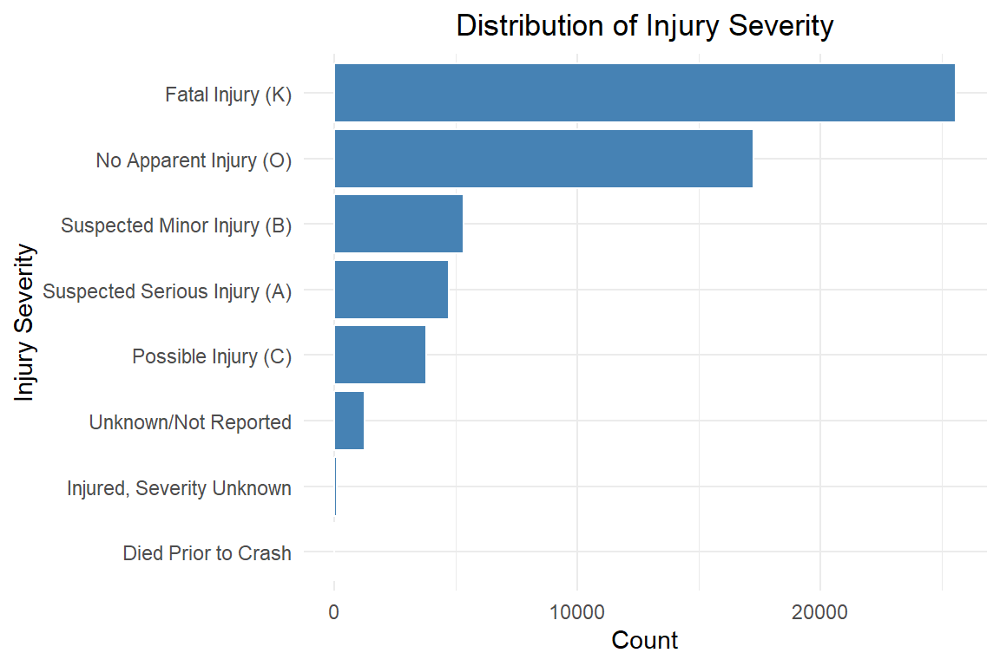
# Filter out Unknown/Missing - set factor levels
car_crash_usa <- car_crash_usa %>%
mutate(
INJ_SEV = case_when(
INJ_SEV == 4 ~ "Dead",
INJ_SEV %in% c(1, 2, 3) ~ "Injured",
INJ_SEV == 0 ~ "No Injury",
TRUE ~ "Unknown/Missing"
)
) %>%
filter(INJ_SEV != "Unknown/Missing") %>%
mutate(INJ_SEV = factor(INJ_SEV, levels = c("No Injury", "Injured", "Dead")))After restricting to drivers and recoding injury severity into three classes, the outcome is moderately imbalanced, with fatalities (“Dead”) forming the largest share (~45%), which motivates using stratified splits and class-balanced evaluation metrics.
# Generate the frequency table for the modified inj_sev column
severity_counts <- car_crash_usa %>%
group_by(INJ_SEV) %>%
summarise(
Count = n(),
Percentage = n() / nrow(car_crash_usa) * 100
) %>%
arrange(INJ_SEV)
severity_counts# A tibble: 3 × 3
INJ_SEV Count Percentage
<fct> <int> <dbl>
1 No Injury 17242 30.5
2 Injured 13777 24.3
3 Dead 25578 45.2Driver AGE is retained as numeric. Invalid/unreported values are recoded to NA and imputed within the recipe to retain observations without treating missingness as a numeric value.
# First, we label unknown/unreported ages as missings
car_crash_usa <- car_crash_usa %>%
mutate(
AGE = ifelse(AGE %in% c(998, 999), NA_real_, AGE)
)summary(car_crash_usa$AGE) # max age is 103 and youngest age is 7 Min. 1st Qu. Median Mean 3rd Qu. Max. NA's
7.00 28.00 40.00 43.12 57.00 103.00 798 car_crash_usa %>%
mutate(
AGE_GRP = case_when(
AGE < 16 ~ "<16",
AGE <= 24 ~ "16–24",
AGE <= 34 ~ "25–34",
AGE <= 44 ~ "35–44",
AGE <= 54 ~ "45–54",
AGE <= 64 ~ "55–64",
AGE <= 74 ~ "65–74",
AGE >= 75 ~ "75+"
)
) %>%
count(AGE_GRP) %>%
ggplot(aes(x = AGE_GRP, y = n, fill=AGE_GRP)) +
geom_col() +
labs(
title = "Driver Age Distribution (Grouped)",
x = "Age Group",
y = "Number of Drivers"
) +
theme_minimal() +
theme(plot.title = element_text(hjust = 0.5),
legend.position = "none")
We recode SEX into Male, Female, and Unknown by grouping non-informative codes. This preserves all observations and yields a stable categorical predictor.
car_crash_usa <- car_crash_usa %>%
mutate(
SEX = case_when(
SEX == 1 ~ "Male",
SEX == 2 ~ "Female",
SEX %in% c(8, 9) ~ "Unknown",
TRUE ~ "Unknown"
) %>%
factor(levels = c("Male", "Female", "Unknown"))
)
SEX_COUNTS <- car_crash_usa %>%
count(SEX) %>%
mutate(Percent = n / sum(n) * 100)
SEX_COUNTS# A tibble: 3 × 3
SEX n Percent
<fct> <int> <dbl>
1 Male 41768 73.8
2 Female 14063 24.8
3 Unknown 766 1.35REST_USE is recoded into a three-level factor (restrained, unrestrained, unknown) to reduce sparsity while preserving the primary safety distinction. Injury severity differs markedly across these groups, with unrestrained drivers exhibiting a substantially higher share of fatal outcomes, consistent with expected seatbelt protection effects.
# Categorise into simpler groups.
car_crash_usa <- car_crash_usa %>%
mutate(
REST_SIMPLE = case_when(
REST_USE %in% c(1, 2, 3, 6, 8) ~ "restrained",
REST_USE == 20 ~ "unrestrained",
REST_USE %in% c(97, 98, 99) ~ "unknown",
TRUE ~ "unknown"
) %>% factor(levels = c("restrained", "unrestrained", "unknown"))
)
car_crash_usa %>% count(REST_SIMPLE, sort = TRUE)# A tibble: 3 × 2
REST_SIMPLE n
<fct> <int>
1 restrained 33432
2 unrestrained 17985
3 unknown 5180# Injury severity by restraint use
car_crash_usa %>%
count(REST_SIMPLE, INJ_SEV) %>%
group_by(REST_SIMPLE) %>%
mutate(prop = n / sum(n)) %>%
ggplot(aes(x = REST_SIMPLE, y = prop, fill = INJ_SEV)) +
geom_col() +
coord_flip() +
labs(
title = "Injury severity distribution by restraint use",
x = NULL,
y = "Proportion"
) +
theme_minimal() +
theme(plot.title = element_text(hjust = 0.5))
ALC_RES encodes both measured blood alcohol concentration (BAC, stored as BAC × 1000) and administrative codes indicating that a test was not performed or the result is unknown. We therefore separate alcohol involvement into two complementary representations: a numeric BAC variable (BAC_VALUE) retained only when a valid measurement exists, and a compact categorical indicator (ALC_SIMPLE) that captures test status and retains an explicit unknown category. Summaries of the original ALC_RES codes are used descriptively to understand reporting patterns, while modeling relies on these simplified representations.
# Keep: numeric BAC when measured + compact indicator for interpretation.
car_crash_usa <- car_crash_usa %>%
mutate(
BAC_VALUE = if_else(ALC_RES >= 0 & ALC_RES < 995, ALC_RES / 1000, NA_real_),
ALC_SIMPLE = case_when(
ALC_RES >= 0 & ALC_RES < 20 ~ "negative", # BAC < 0.020
ALC_RES >= 20 & ALC_RES < 995 ~ "positive", # BAC >= 0.020
TRUE ~ "unknown" # includes not tested / unknown result codes
) %>% factor(levels = c("negative", "positive", "unknown"))
)
# Average injury severity by original ALC_RES codes
alc_mean_severity <- car_crash_usa %>%
filter(!ALC_RES %in% c(97, 98, 99)) %>% # drop highest-level unknowns
mutate(sev_numeric = as.numeric(INJ_SEV)) %>%
group_by(ALC_RES) %>%
summarise(
Mean_Severity = mean(sev_numeric, na.rm = TRUE),
.groups = "drop"
) %>%
mutate(ALC_RES_NUM = as.numeric(ALC_RES))
ggplot(alc_mean_severity, aes(x = ALC_RES_NUM, y = Mean_Severity)) +
geom_point(aes(color = Mean_Severity), size = 2) +
scale_x_continuous(
name = "Alcohol test result code (ALC_RES)"
) +
scale_y_continuous(
breaks = c(1, 2, 3),
labels = c("No Injury (1)", "Injured (2)", "Dead (3)"),
limits = c(1, 3),
name = "Average injury severity"
) +
scale_color_gradient(low = "yellow", high = "red") +
labs(
title = "Average injury severity by alcohol test outcome code",
caption = "Measured BAC codes (0–994) represent BAC×1000"
) +
theme_minimal() +
theme(
legend.position = "none",
axis.text.x = element_text(angle = 45, hjust = 1),
plot.title = element_text(hjust = 0.5)
)
car_crash_usa <- car_crash_usa %>%
select(-BAC_VALUE)Among cases with a recorded BAC measurement, average injury severity is high, consistent with alcohol testing being more common in severe crashes.
DRUGS indicates reported drug involvement for the driver. We use the descriptive labels as a categorical predictor, retaining an explicit unknown category and grouping rare categories into an other level to reduce sparsity and improve model stability.
car_crash_usa <- car_crash_usa %>%
mutate(
DRUGS = DRUGSNAME %>%
forcats::fct_explicit_na(na_level = "Unknown") %>%
forcats::fct_lump_min(min = 200, other_level = "Other")
) %>%
select(-DRUGSNAME)
# distribution of drugs by category
car_crash_usa %>%
count(DRUGS, sort = TRUE) %>%
mutate(pct = n / sum(n) * 100)# A tibble: 4 × 3
DRUGS n pct
<fct> <int> <dbl>
1 No (drugs not involved) 23880 42.2
2 Not Reported 22695 40.1
3 Reported as Unknown 5730 10.1
4 Yes (drugs involved) 4292 7.58This variable is dropped. After restricting to drivers, seat position has essentially no variation and provides negligible predictive signal.
VEH_NO is an administrative index within a crash and carries no substantive information; including it would add arbitrary ordering and could amplify within-crash dependence. VPICMAKENAME and VPICMODELNAME are high-cardinality identifiers that largely proxy for other vehicle characteristics already represented (e.g., body class and weight). To avoid sparsity and instability, we exclude these fields.
VPICBODYCLASSNAME is collapsed into: passenger_car, suv, truck, motorcycle, other, and unknown. These groups reflect fundamental differences in mass and occupant protection, reduce sparsity, and align with standard road safety categories.
# Injury severity by vehicle body class
ggplot(car_crash_usa, aes(x = BODYCLASS_SIMPLE, fill = factor(INJ_SEV))) +
geom_bar(position = "fill") +
labs(
x = "Vehicle Body Class (Grouped)",
y = "Proportion",
fill = "Injury Severity",
title = "Injury Severity Distribution by Vehicle Body Class"
) +
theme_minimal() +
theme(axis.text.x = element_text(angle = 45, hjust = 1),
plot.title = element_text(hjust = 0.5))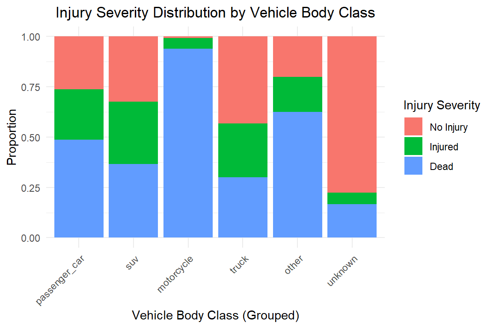
Motorcycle crashes show a significantly higher fatality share, while trucks show comparatively lower fatality shares.
GVWR is mapped to broad weight classes, retaining Unknown where missing. This captures vehicle mass, a key determinant of crash forces, using stable categories suitable for modeling.
# distribution of vehicles by weight class
p1<-car_crash_usa %>%
ggplot(aes(y=WEIGHT, fill=WEIGHT)) +
geom_bar() +
theme_minimal()+
labs(title="Vehicle Weight") +
theme(legend.position = "none",
plot.title = element_text(hjust = 0.5),
axis.text.x = element_text(angle = 45, vjust = 1, hjust = 1))
# distribution of inj_sev by weight class
p2<-car_crash_usa %>%
ggplot(aes(x=WEIGHT, fill=INJ_SEV)) +
geom_bar(position = "fill") +
labs(y = "Count", title = "Injury by Vehicle Weight Class") +
coord_flip()+
theme_minimal() +
theme(plot.title = element_text(hjust = 0.5))
p1+p2
Lighter vehicle classes exhibit higher fatality shares in the data.
VE_TOTAL records the total number of vehicles involved in the crash. We keep it as a numeric count of vehicles involved in the crash. The variable is interpretable and captures an important mechanism: multi-vehicle crashes may differ systematically from single-vehicle crashes in both impact dynamics and exposure to secondary collisions.
# Outlier check for VE_TOTAL
x <- car_crash_usa$VE_TOTAL[!is.na(car_crash_usa$VE_TOTAL)]
q1 <- quantile(x, 0.25)
q3 <- quantile(x, 0.75)
iqr <- q3 - q1
lower <- q1 - 1.5 * iqr
upper <- q3 + 1.5 * iqr
# cat("Lower fence:", lower, "\n")
# cat("Upper fence:", upper, "\n")
cat("Number of outliers:", sum(x < lower | x > upper), "\n")Number of outliers: 3484 # Boxplot for VE_TOTAL
boxplot(car_crash_usa$VE_TOTAL,
main = "Boxplot of VE_TOTAL",
ylab = "VE_TOTAL",
col = "lightblue")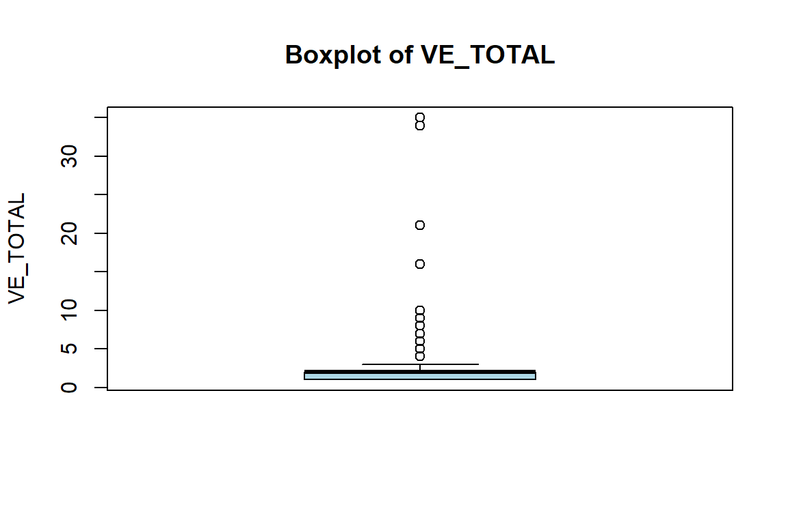
# table(car_crash_usa$VE_TOTAL)
# sort(table(car_crash_usa$VE_TOTAL), decreasing = TRUE)High values are plausible in large pileups and are retained.
The first harmful event HARM_EV includes many detailed mechanisms. We collapse categories into broader, mechanism-based groups (e.g., other motor vehicle, non-motorist, run-off-road, barrier/guardrail) to stabilize estimates and improve interpretability.
# Recode HARM_EV into broader categories (to reduce number of levels)
car_crash_usa <- car_crash_usa %>%
mutate(HARM_EV = as.character(HARM_EVNAME)) %>%
mutate(
HARM_EV = forcats::fct_collapse(
factor(HARM_EV),
"Non-Collision" = c("Rollover/Overturn", "Jackknife (harmful to this vehicle)",
"Fire/Explosion", "Immersion or Partial Immersion",
"Injured In Vehicle (Non-Collision)", "Other Non-Collision",
"Pavement Surface Irregularity (Ruts, Potholes, Grates, etc.)"),
"Non-Motorist" = c("Pedestrian", "Pedalcyclist", "Non-Motorist on Personal Conveyance",
"Fell/Jumped from Vehicle", "Ridden Animal or Animal Drawn Conveyance"),
"Other Motor Vehicle" = c("Motor Vehicle In-Transport", "Parked Motor Vehicle",
"Working Motor Vehicle", "Motor Vehicle in Motion Outside the Trafficway",
"Motor Vehicle In-Transport Strikes or is Struck by Cargo, Persons or Objects Set-in-Motion from/by Another Motor Vehicle In Transport"),
"Tree/Vegetation" = c("Tree (Standing Only)", "Shrubbery"),
"Utility/Traffic Support" = c("Utility Pole/Light Support", "Traffic Sign Support",
"Traffic Signal Support", "Post, Pole or Other Supports"),
"Barrier/Guardrail" = c("Concrete Traffic Barrier", "Guardrail Face", "Guardrail End",
"Cable Barrier", "Other Traffic Barrier",
"Impact Attenuator/Crash Cushion"),
"Roadside Structure" = c("Bridge Pier or Support", "Bridge Overhead Structure",
"Bridge Rail (Includes parapet)", "Building", "Wall",
"Fire Hydrant", "Mail Box", "Culvert", "Fence"),
"Run-off-Road" = c("Ditch", "Embankment", "Curb", "Ground", "Snow Bank"),
"Other Object" = c("Other Object (not fixed)", "Object That Had Fallen From Motor Vehicle In-Transport",
"Cargo/Equipment Loss, Shift, or Damage [harmful]", "Thrown or Falling Object",
"Live Animal", "Boulder"),
"Rail Incident" = c("Railway Vehicle", "Road Vehicle on Rails"),
"Unknown/Other" = c("Harmful Event, Details Not Reported", "Other Fixed Object",
"Unknown Fixed Object", "Unknown Object Not Fixed",
"Reported as Unknown")
)
) %>%
select(-HARM_EVNAME)
# Count outcomes (ranked by frequency)
car_crash_usa %>%
count(HARM_EV) %>%
arrange(desc(n))# A tibble: 11 × 2
HARM_EV n
<fct> <int>
1 Other Motor Vehicle 33737
2 Non-Motorist 8222
3 Run-off-Road 3149
4 Non-Collision 2932
5 Tree/Vegetation 2541
6 Barrier/Guardrail 1789
7 Roadside Structure 1603
8 Utility/Traffic Support 1571
9 Other Object 621
10 Unknown/Other 321
11 Rail Incident 111Collision manner MAN_COLL is simplified by merging rare or substantively similar categories. The goal is to preserve the main collision geometries (e.g., angle, front-to-front, front-to-rear) while avoiding sparse levels that destabilize model training.
# 1. Recode MAN_COLL numeric codes to descriptive labels
car_crash_usa <- car_crash_usa %>%
mutate(
MAN_COLL = as.character(MAN_COLL),
MAN_COLL = case_match(
MAN_COLL,
"0" ~ "Non-Vehicle Collision",
"1" ~ "Front-to-Rear",
"2" ~ "Front-to-Front",
"6" ~ "Angle",
"7" ~ "Sideswipe -- Same Direction",
"8" ~ "Sideswipe -- Opposite Direction",
"9" ~ "Rear-to-Side",
"11" ~ "Other",
"98" ~ "Unknown",
"99" ~ "Unknown",
.default = "Other"
),
MAN_COLL = factor(MAN_COLL)
)
car_crash_usa %>%
count(MAN_COLL)%>%
arrange(desc(n))# A tibble: 9 × 2
MAN_COLL n
<fct> <int>
1 Non-Vehicle Collision 23352
2 Angle 14845
3 Front-to-Front 8967
4 Front-to-Rear 6553
5 Sideswipe -- Same Direction 1412
6 Sideswipe -- Opposite Direction 981
7 Other 212
8 Unknown 208
9 Rear-to-Side 67# 2. Create binned MAN_COLL variable
car_crash_usa <- car_crash_usa %>%
mutate(
MAN_COLL_BIN = case_when(
MAN_COLL == "Front-to-Front" ~ "Head-on",
MAN_COLL == "Front-to-Rear" ~ "Rear-end",
str_detect(as.character(MAN_COLL), "Sideswipe") ~ "Sideswipe",
MAN_COLL %in% c("Angle", "Rear-to-Side") ~ "Angle",
MAN_COLL == "Non-Vehicle Collision" ~ "Non-vehicle",
MAN_COLL %in% c("Other", "Unknown") ~ "Other/Unknown",
TRUE ~ "Other/Unknown"
),
MAN_COLL_BIN = factor(
MAN_COLL_BIN,
levels = c(
"Rear-end",
"Sideswipe",
"Angle",
"Head-on",
"Non-vehicle",
"Other/Unknown"
)
)
)Travel speed TRAV_SP is retained as a numeric predictor where recorded and set to NA when missing or invalid. We handle missingness and potential nonlinearity within the modeling pipeline (including binned representations used later).
car_crash_usa <- car_crash_usa %>%
mutate(TRAV_SP = case_when(
TRAV_SP > 997 ~ NA, # recode to combine unknowns
TRUE ~ TRAV_SP))
# dist of trav spd
p1 <- car_crash_usa %>%
filter(TRAV_SP < 151) %>%
ggplot(aes(x = TRAV_SP)) +
# Add a density curve on top
geom_density(fill = "#0000FF20", color = "blue") +
# Add the boxplot underneath
geom_boxplot(aes(y = -0.005), width = 0.005, fill = "#0000FF80") +
labs(title = "Travel Speed Distribution",
x = "Travel Speed (mph)",
y = "Density") +
theme_minimal() +
theme(plot.title = element_text(hjust = 0.5))
# trav_sp by outcome
p2 <- car_crash_usa %>%
filter(TRAV_SP < 151) %>%
ggplot(aes(x = TRAV_SP, y = INJ_SEV, fill = INJ_SEV)) +
geom_boxplot() +
labs(
title = "Distribution of Speed by Injury ",
x = "Travel Speed (mph)",
y = "Injury Severity"
) +
theme_minimal() +
theme(legend.position = "none",
plot.title = element_text(hjust = 0.5))
p1 + p2
Travel speeds tend to be higher for more severe injury outcomes.
The point of impact IMPACT1 is grouped into broad sides (Front, Rear, Left, Right, Top/Under, Non-collision), with all unknown/other codes consolidated to a single level.
car_crash_usa <- car_crash_usa %>%
mutate(
IMPACT1 = case_when(
IMPACT1 %in% c(98, 99) ~ "Unknown",
TRUE ~ IMPACT1NAME
),
IMPACT1 = case_when(
IMPACT1 %in% c("11 Clock Point", "12 Clock Point", "1 Clock Point") ~ "Front",
IMPACT1 %in% c("5 Clock Point", "6 Clock Point", "7 Clock Point") ~ "Rear",
IMPACT1 %in% c("2 Clock Point", "3 Clock Point", "4 Clock Point") |
str_detect(IMPACT1, "Right") ~ "Right",
IMPACT1 %in% c("8 Clock Point", "9 Clock Point", "10 Clock Point") |
str_detect(IMPACT1, "Left") ~ "Left",
IMPACT1 %in% c("Top", "Undercarriage") ~ "Top/Under",
str_detect(IMPACT1, "Non-Collision") ~ "Non-Collision",
TRUE ~ "Other/Unknown"
) %>% factor(levels = c("Front", "Rear", "Left", "Right",
"Top/Under", "Non-Collision", "Other/Unknown"))
) %>%
select(-IMPACT1NAME)
# Compact distribution table (counts + %)
car_crash_usa %>%
count(IMPACT1) %>%
mutate(pct = scales::percent(n / sum(n), accuracy = 0.1))# A tibble: 7 × 3
IMPACT1 n pct
<fct> <int> <chr>
1 Front 36618 64.7%
2 Rear 4393 7.8%
3 Left 5214 9.2%
4 Right 4364 7.7%
5 Top/Under 659 1.2%
6 Non-Collision 2904 5.1%
7 Other/Unknown 2445 4.3% Vehicle deformation level DEFORMED is retained as an ordinal proxy for impact severity, with Unknown retained to avoid implicitly dropping non-reported cases.
car_crash_usa <- car_crash_usa %>%
mutate(
DEFORMEDNAME = case_when(
DEFORMED %in% c(7, 8, 9) ~ "Unknown",
TRUE ~ DEFORMEDNAME
),
DEFORMED = factor(DEFORMEDNAME)
) %>%
select(-DEFORMEDNAME)
car_crash_usa %>%
count(DEFORMED) %>%
mutate(prop = round(n/sum(n), 4) * 100)# A tibble: 5 × 3
DEFORMED n prop
<fct> <int> <dbl>
1 Disabling Damage 37398 66.1
2 Functional Damage 4416 7.8
3 Minor Damage 3918 6.92
4 No Damage 838 1.48
5 Unknown 10027 17.7 ROLLOVER is simplified into a binary indicator capturing whether a rollover occurred, with an explicit unknown category retained to preserve missing or unreported cases.
car_crash_usa <- car_crash_usa %>%
mutate(
ROLINLOCNAME = case_when(
ROLINLOCNAME %in% c("Not Applicable", "Unknown") ~ "Unknown",
TRUE ~ ROLINLOCNAME
),
ROLLOVER = case_when(
ROLINLOCNAME == "Unknown" ~ 8, # harmonise unknown rollover coding
TRUE ~ ROLLOVER
),
ROLLOVER = factor(ROLLOVER)
)
# Use rollover location as the final rollover variable and drop the original
car_crash_usa <- car_crash_usa %>%
mutate(ROLLOVER = factor(ROLINLOCNAME)) %>%
select(-ROLINLOCNAME)FIRE_EXP is an indicator for vehicle fire. Retained as a categorical variable with Unknown explicitly preserved where reporting is missing.
car_crash_usa <- car_crash_usa %>%
mutate(
FIRE_EXP_SIMPLE = case_when(
FIRE_EXP == 1 ~ "fire",
FIRE_EXP == 0 ~ "no_fire",
TRUE ~ "unknown"
) %>% factor(levels = c("no_fire", "fire", "unknown"))
)
car_crash_usa %>%
count(FIRE_EXP) %>%
mutate(prop = round(n/sum(n), 4)*100)# A tibble: 2 × 3
FIRE_EXP n prop
<dbl> <int> <dbl>
1 0 54507 96.3
2 1 2090 3.69AIR_BAG is simplified to deployed, not_deployed, and unknown. Deployment is correlated with crash severity (high-energy impacts are more likely to deploy airbags), so its association with worse outcomes should be interpreted as reflecting crash intensity as well as protection.
# Injury severity by airbag deployment
car_crash_usa %>%
count(AIRBAG_SIMPLE, INJ_SEV) %>%
group_by(AIRBAG_SIMPLE) %>%
mutate(prop = n / sum(n)) %>%
ggplot(aes(x = AIRBAG_SIMPLE, y = prop, fill = INJ_SEV)) +
geom_col() +
coord_flip() +
labs(
title = "Injury severity distribution by airbag deployment",
x = NULL,
y = "Proportion"
) +
theme_minimal() +
theme(plot.title = element_text(hjust = 0.5))
HOUR is treated as cyclical time. Invalid hour codes are set to missing and imputed within the recipe, and we encode hour using sine/cosine transformations so that late-night and early-morning hours are represented as close in feature space.
car_crash_usa %>%
filter(!is.na(HOUR), between(HOUR, 0, 23)) %>%
ggplot(aes(x = factor(HOUR, levels = 0:23), fill="darkred")) +
geom_bar() +
labs(
title = "Distribution of Crash Hour (0–23)",
x = "Hour of Day",
y = "Count"
) +
theme_minimal() +
theme(axis.text.x = element_text(angle = 0, vjust = 0.5),
plot.title = element_text(hjust = 0.5),
legend.position="none")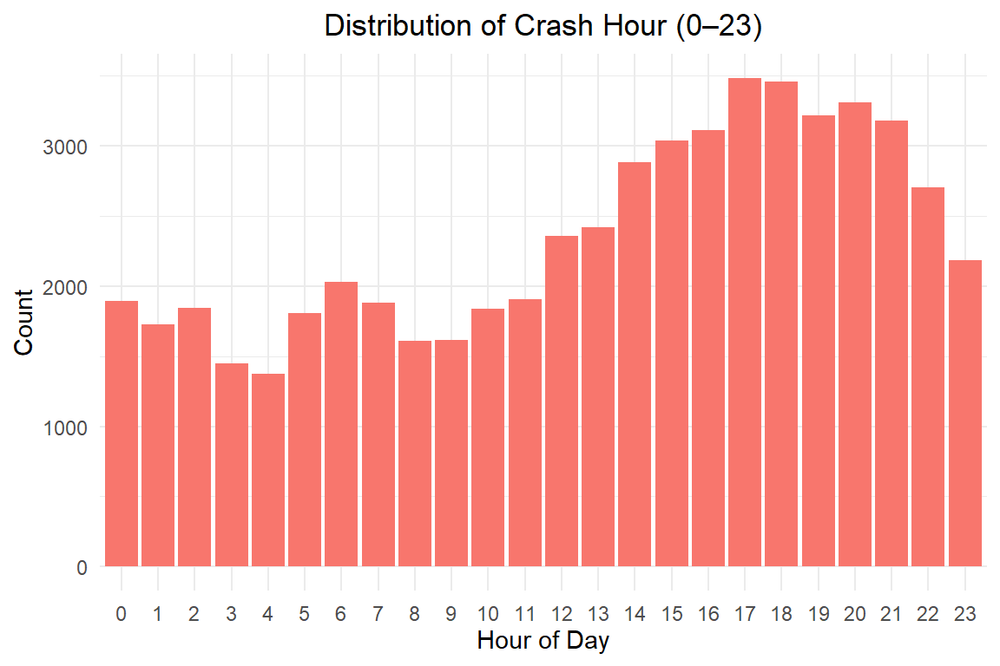
Crash frequency varies systematically over the day, with lower counts overnight and higher incidence during afternoon and early evening periods
Day-of-month DAY shows little systematic structure across the calendar days, so we reduce dimensionality by recoding to day-of-week WEEKDAY. This better captures recurring traffic patterns (weekday commuting vs. weekend travel) while avoiding an arbitrary 1–31 scale.
For RUR_URB, We retain a three-level factor (Urban, Rural, Unknown), merging administrative/non-informative codes into Unknown.
car_crash_usa$RUR_URB <- factor(car_crash_usa$RUR_URBNAME)
car_crash_usa <- car_crash_usa %>%
mutate(RUR_URB = case_when(
RUR_URB %in% c("Not Reported", "Trafficway Not in State Inventory", "Unknown") ~ "Unknown",
TRUE ~ RUR_URB
)) %>%
select(-RUR_URBNAME)
car_crash_usa %>%
count(RUR_URB)# A tibble: 3 × 2
RUR_URB n
<chr> <int>
1 Rural 22610
2 Unknown 368
3 Urban 33619Roadway type ROUTE contains many low-frequency categories. We group route codes into broader road hierarchy categories to reduce sparsity while preserving interpretable differences in speed environment and traffic mix.
car_crash_usa <- car_crash_usa %>%
mutate(
ROUTE = as.character(ROUTE),
ROUTE = dplyr::recode(
ROUTE,
"0" = "Not Signed",
"1" = "Interstate",
"2" = "US Highway",
"3" = "State Highway",
"4" = "County",
"5" = "Township",
"6" = "Municipal",
"10" = "Parkway/Forest Route",
"11" = "Off-Interstate Business",
"12" = "Secondary Route",
"13" = "BIA",
"95" = "Other",
"96" = "Unknown",
"99" = "Unknown",
.default = "Unknown"
),
ROUTE = factor(ROUTE)
)
car_crash_usa %>%
count(ROUTE, sort = TRUE) %>%
ggplot(aes(x = fct_reorder(ROUTE, n), y = n, fill=ROUTE)) +
geom_col() +
coord_flip() +
labs(title = "Crashes by Route Type", x = NULL, y = "Count") +
theme_minimal() +
theme(plot.title = element_text(hjust = 0.5),
legend.position="none")
car_crash_usa <- car_crash_usa %>%
mutate(
ROUTE_grp = case_when(
ROUTE %in% c("Interstate", "US Highway", "State Highway") ~ "Major highways",
ROUTE %in% c("County", "Municipal", "Township", "Secondary Route") ~ "Local roads",
ROUTE == "Not Signed" ~ "Not signed",
ROUTE == "Other" ~ "Other",
TRUE ~ "Unknown"
),
ROUTE_grp = factor(
ROUTE_grp,
levels = c("Major highways", "Local roads", "Not signed", "Other", "Unknown")
)
)Road surface condition VSURCOND is collapsed into a small set of friction-relevant groups (e.g., dry, wet, snow/ice, other/unknown) to reduce sparsity while preserving the primary safety mechanism.
# Collapse roadway surface condition into interpretable groups
car_crash_usa <- car_crash_usa %>%
mutate(
VSURCOND_SIMPLE = case_when(
VSURCOND == 1 ~ "dry",
VSURCOND %in% c(2, 3, 4) ~ "wet_icy", # wet, snow/slush, ice
VSURCOND %in% c(8, 9, 0) ~ "unknown", # other / unknown / not reported
TRUE ~ "unknown"
) %>% factor(levels = c("dry", "wet_icy", "unknown"))
)
car_crash_usa %>%
count(VSURCOND_SIMPLE) %>%
mutate(prop = round(n/sum(n), 4)*100)# A tibble: 3 × 3
VSURCOND_SIMPLE n prop
<fct> <int> <dbl>
1 dry 47847 84.5
2 wet_icy 6737 11.9
3 unknown 2013 3.56LGT_COND contains detailed and occasionally ambiguous lighting categories. To reduce sparsity and improve interpretability, lighting conditions are recoded into a small set of visibility states. This representation preserves meaningful differences in visibility while yielding stable categories for modeling.
# Recode light condition into a smaller set of interpretable categories
car_crash_usa <- car_crash_usa %>%
mutate(
LGT_SIMPLE = case_when(
LGT_COND == 1 ~ "daylight",
LGT_COND == 2 ~ "dark_no_lights",
LGT_COND == 3 ~ "dark_lit",
LGT_COND == 6 ~ "dark_unknown",
LGT_COND %in% c(4, 5) ~ "twilight", # dawn + dusk
LGT_COND %in% c(7, 8, 9) ~ "unknown", # unknown / not reported
TRUE ~ "unknown"
) %>% factor(levels = c(
"daylight", "dark_no_lights", "dark_lit",
"dark_unknown", "twilight", "unknown"
))
)
# Distribution check
car_crash_usa %>%
tabyl(LGT_SIMPLE) %>%
adorn_pct_formatting(digits = 2) LGT_SIMPLE n percent
daylight 28012 49.49%
dark_no_lights 13913 24.58%
dark_lit 11249 19.88%
dark_unknown 543 0.96%
twilight 2617 4.62%
unknown 263 0.46%WEATHER contains detailed and infrequent categories. We collapse it into a small set of mechanism-based groups reflecting visibility and road-surface conditions, with an explicit unknown category retained to improve stability for modeling.
Because weather and lighting jointly affect visibility, their interaction is considered later during feature engineering.
# Recode weather into broader categories based on visibility and road conditions
car_crash_usa <- car_crash_usa %>%
mutate(
WEATHER_SIMPLE = case_when(
WEATHER %in% c(1, 10) ~ "good_visibility", # clear, cloudy
WEATHER %in% c(2, 3, 4, 5, 12) ~ "precipitation", # rain, mist, sleet, snow, freezing rain
WEATHER %in% c(6, 7, 8, 11) ~ "low_visibility", # fog, blowing dirt/snow, crosswinds
WEATHER %in% c(98, 99) ~ "unknown", # not reported / unknown
TRUE ~ "unknown"
) %>% factor(levels = c(
"good_visibility", "precipitation",
"low_visibility", "unknown"
))
)
# Distribution check post cleaning
car_crash_usa %>%
tabyl(WEATHER_SIMPLE) %>%
adorn_pct_formatting(digits = 2) WEATHER_SIMPLE n percent
good_visibility 49454 87.38%
precipitation 5044 8.91%
low_visibility 191 0.34%
unknown 1908 3.37%# Severity composition by weather
car_crash_usa %>%
count(WEATHER_SIMPLE, INJ_SEV) %>%
group_by(WEATHER_SIMPLE) %>%
mutate(prop = n / sum(n)) %>%
ggplot(aes(x = WEATHER_SIMPLE, y = prop, fill = INJ_SEV)) +
geom_col() +
coord_flip() +
labs(title = "Injury severity by weather", x = NULL, y = "Proportion") +
theme_minimal() +
theme(plot.title = element_text(hjust = 0.5))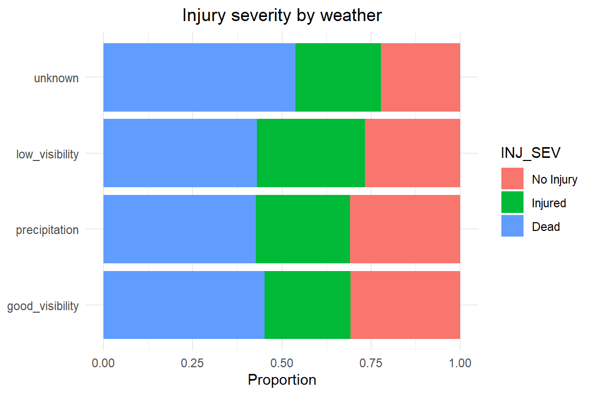
Posted speed limit VSPD_LIM is retained as numeric roadway context. We later combine it with travel speed to engineer a speeding indicator (travel speed above posted limit), which is likely more informative than either measure alone.
car_crash_usa <- car_crash_usa %>%
mutate(VSPD_LIM = case_when(
VSPD_LIM > 80 ~ NA,
TRUE ~ VSPD_LIM))
car_crash_usa %>%
filter(!is.na(VSPD_LIM)) %>%
ggplot(aes(x=VSPD_LIM)) +
geom_histogram(binwidth = 5, fill = "#4B9E71", color = "white", boundary = 0) +
scale_x_continuous(breaks = seq(0, 80, 5)) +
labs(title = "Distribution of Speed Limit") +
theme_minimal() +
theme(plot.title = element_text(hjust=0.5))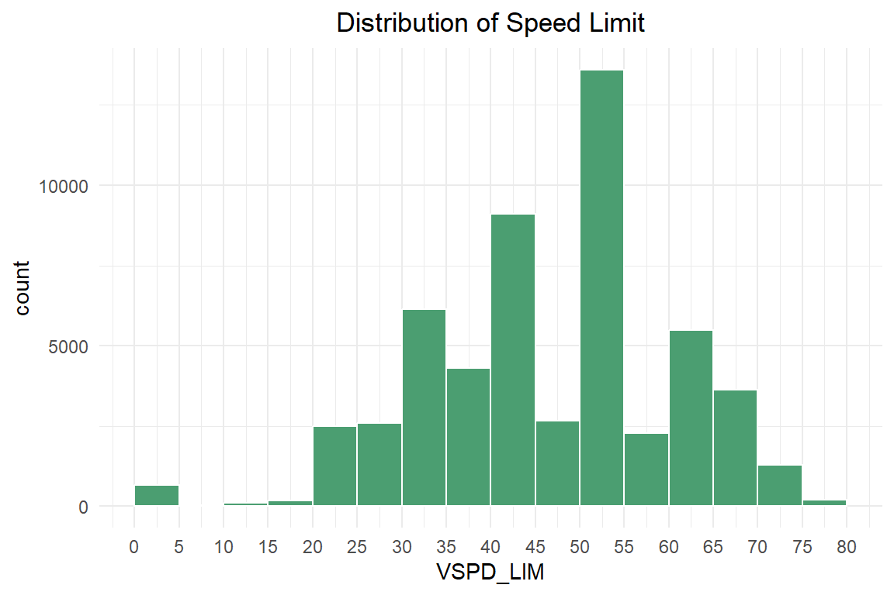
Some predictors are inherently numeric and encode quantitative magnitude rather than discrete states. For such variables, retaining an “Unknown” or “Unreported” category would discard scale information and incorrectly treat non-observation as a meaningful level. We therefore examine the extent and nature of missingness in numeric variables to motivate appropriate imputation strategies. These strategies are implemented later in the recipes stage.
# calculates the % of NAs in every column
missing_audit <- car_crash_usa %>%
summarise(across(everything(), ~ sum(is.na(.) ) / n() * 100)) %>%
pivot_longer(everything(), names_to = "Variable", values_to = "Percent_Missing") %>%
arrange(desc(Percent_Missing)) %>%
filter(Percent_Missing > 0)
# visual of the missing data
ggplot(missing_audit, aes(x = reorder(Variable, Percent_Missing), y = Percent_Missing)) +
geom_col(fill = "tomato") +
geom_text(aes(label = paste0(round(Percent_Missing, 1), "%")),
hjust = -0.2,
size = 3.5) +
coord_flip() +
labs(title = "Percentage of Missing Data by Variable",
y = "% Missing",
x = "Variable") +
expand_limits(y = max(missing_audit$Percent_Missing) * 1.1) +
theme_minimal()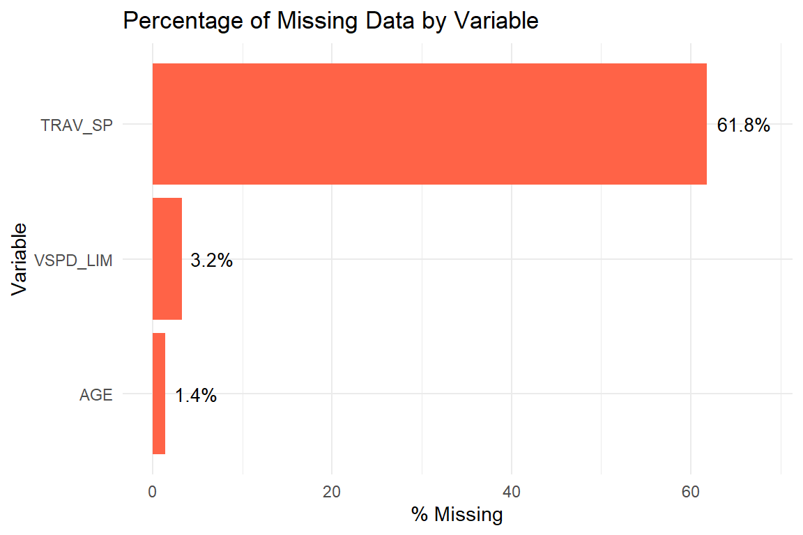
Travel speed is missing over 60% of observations. We expect this variable to be a very important predictor for injury severity of a crash; thus, we would like to keep this variable and handle the missing data.
# lets explore the missingness structure of TRAV_SP: with INJ_SEV
car_crash_usa %>%
group_by(INJ_SEV) %>%
summarise(
total_obs = n(),
missing_trav_sp = sum(is.na(TRAV_SP)),
percent_missing = mean(is.na(TRAV_SP)) * 100
) %>%
arrange(desc(percent_missing))# A tibble: 3 × 4
INJ_SEV total_obs missing_trav_sp percent_missing
<fct> <int> <int> <dbl>
1 Dead 25578 16978 66.4
2 Injured 13777 8107 58.8
3 No Injury 17242 9878 57.3# TRAV_SP seems to be correlated with INJ_SEV -- means TRAV_SP is likely MAR
car_crash_usa %>%
mutate(Speed_Status = ifelse(is.na(TRAV_SP), "Missing", "Known")) %>%
ggplot(aes(x = Speed_Status, fill = INJ_SEV)) +
geom_bar(position = "fill") +
labs(title = "Are Fatalities Hidden in the Missing Data?",
y = "Proportion of Crashes",
x = "Is Speed Recorded?") +
scale_y_continuous(labels = scales::percent) +
theme_minimal() +
theme(plot.title = element_text(hjust = 0.5))
Exploration of the TRAV_SP variable suggests a non-random missingness pattern that is strongly correlated with ‘Injury Severity.’ Specifically, the data suggests that fatal outcomes are disproportionately associated with missing speed values. This informative missingness may be attributed to situational constraints at the crash scene, such as extensive vehicle damage preventing post-crash speed assessment or emergency life-saving efforts taking precedence over administrative data collection. To preserve this predictive signal, we opted for a categorical binning strategy, treating ‘Unknown’ as a distinct and meaningful level rather than imputing these values.
Although ‘Speed Limit’ data was missing for 3% of observations, these values are logically deducible from the surrounding context of the crash. By leveraging the strong correlation between road type and state regulations on speed limts, a kNN imputation strategy was implemented. This approach allows the model to estimate missing speed limits by identifying similar road segments within the same jurisdiction.
# lets explore the missingness structure of VSPD_LIM: with INJ_SEV
car_crash_usa %>%
group_by(ROUTE) %>%
summarise(
total_obs = n(),
missing_trav_sp = sum(is.na(VSPD_LIM)),
percent_missing = mean(is.na(VSPD_LIM)) * 100
) %>%
arrange(desc(percent_missing))# A tibble: 13 × 4
ROUTE total_obs missing_trav_sp percent_missing
<fct> <int> <int> <dbl>
1 Parkway/Forest Route 11 2 18.2
2 Off-Interstate Business 17 2 11.8
3 BIA 18 2 11.1
4 Unknown 739 57 7.71
5 Not Signed 4770 319 6.69
6 Municipal 4926 304 6.17
7 County 6020 323 5.37
8 Township 488 25 5.12
9 US Highway 10249 239 2.33
10 State Highway 17341 398 2.30
11 Interstate 7595 106 1.40
12 Other 3712 51 1.37
13 Secondary Route 711 1 0.141Preliminary analysis indicates that ‘Age’ is non-randomly distributed across ‘Vehicle Type’ and ‘Sex.’ As a result we choose to use a kNN imputation approach to capture these localized demographic patterns, allowing the model to estimate missing ages by identifying clusters of drivers with similar characteristics.
# correlation b/w age & vehicle type
p1 <-car_crash_usa %>%
filter(!is.na(AGE)) %>%
ggplot(aes(x= AGE, y=BODYCLASS_SIMPLE, fill=BODYCLASS_SIMPLE)) +
geom_boxplot() +
labs(title = "Distribution of Age v. Vehicle Type",
x= "Age of Driver", y= "Vehicle Class") +
theme_minimal() +
theme(legend.position = "none",
plot.title = element_text(hjust = 0.5))
# correlation b/w age & sex
p2 <-car_crash_usa %>%
filter(!is.na(AGE)) %>%
ggplot(aes(x= AGE, y=SEX, fill=SEX)) +
geom_boxplot() +
labs(title = "Distribution of Age v. Sex",
x= "Age of Driver", y= "Sex of Driver") +
theme_minimal() +
theme(legend.position = "none",
plot.title = element_text(hjust = 0.5))
p1 + p2
The dataset contains multiple vehicle–driver observations from the same traffic crash, identified by ST_CASE. Because many predictors are shared at the crash level and outcomes are correlated within crashes, observations cannot be treated as independent. A row-level split would risk assigning vehicles from the same crash to different partitions, leading to information leakage and inflated performance estimates.
To prevent this, all data partitioning is performed at the crash level. Observations are grouped by ST_CASE so that all vehicles involved in a given crash are kept within the same split. This ensures that validation and test sets contain only entirely unseen crashes.
We first create a grouped train–test split for final evaluation. Within the training data, we then use a single grouped validation split for model tuning and comparison. Although full cross-validation can yield more stable estimates, it is computationally costly. Given the large sample size, a single validation split offers a practical trade-off between efficiency and reliable performance while maintaining strict separation of crashes across all splits.
Our training split successfully preserves the original class distribution of INJ_SEV.
# final dataset -- removing old/unused variables --------------------------
car_crash <- car_crash_usa %>%
select(INJ_SEV, VE_TOTAL, HOUR, DAY, ROUTE, HARM_EV, MAN_COLL_BIN, RUR_URB, LGT_SIMPLE,
WEATHER_SIMPLE, BODYCLASS_SIMPLE, AGE, SEX, REST_SIMPLE, AIRBAG_SIMPLE, WEIGHT,
TRAV_SP, VSPD_LIM, ROLLOVER, IMPACT1, DEFORMED, FIRE_EXP, VSURCOND, ALC_SIMPLE,
DRUGS, STATENAME, ST_CASE, WEEKDAY)
# packages ----------------------------------------------------------------
set.seed(123)
levels(car_crash$INJ_SEV) <- make.names(levels(car_crash$INJ_SEV))
# train-test split -------------------------------------------------------
split <- group_initial_split(car_crash, group = ST_CASE,
prop = 0.75)
data_train <- training(split)
data_test <- testing(split)
# Create Grouped Folds: this creates list of row indices where no ST_CASE is split across folds
folds_list <- groupKFold(data_train$ST_CASE, k = 4)
validation_index <- list(Fold1 = folds_list[[1]]) # create our validation set
# Pass these folds to trainControl
ctrl <- trainControl(
index = validation_index, # This forces caret to respect the groups
method = "cv", # method is still validation set, created above
classProbs = TRUE,
savePredictions = "final"
)
# smaller sample (0.5) for kNN:
data_train_small <- data_train %>%
slice_sample(prop = 0.5, replace = FALSE)
# CTRL for kNN sample:
folds_list_small <- groupKFold(data_train_small$ST_CASE, k = 4)
validation_index_small <- list(Fold1 = folds_list_small[[1]])
ctrl_small <- trainControl(
index = validation_index_small, # <--- Uses the small indices
method = "cv",
classProbs = TRUE,
savePredictions = "final"
)
# sanity check: make sure split preserves our original balance
data_train %>%
count(INJ_SEV) %>%
mutate(prop = round(n/sum(n),4)*100)# A tibble: 3 × 3
INJ_SEV n prop
<fct> <int> <dbl>
1 No.Injury 12941 30.5
2 Injured 10358 24.4
3 Dead 19149 45.1In this section, we build a preprocessing pipeline that transforms data_train into a model-ready design matrix. The recipe (i) cleans and standardizes raw inputs (e.g., recoding invalid hour values), (ii) applies the imputation strategies defined earlier for numeric variables, (iii) performs targeted feature engineering (cyclical encoding of time, a speeding flag, and a light–weather interaction with rare-level lumping), and (iv) applies standard modeling preprocessing. Implementing these steps in a single recipe ensures the same transformations are applied consistently across training, validation, and test data, while keeping preprocessing leak-safe.
# recipe: leak-safe imputation -------------------------------------------
crash_rec <- recipe(INJ_SEV ~ ., data = data_train) %>%
# --- 1. CLEANING & IMPUTATION ---
# A. Fix Invalid Hours (99 -> NA) so we can impute them
step_mutate(
HOUR = ifelse(HOUR == 99, NA, HOUR)
) %>%
step_impute_knn(VSPD_LIM, impute_with = imp_vars(STATENAME, ROUTE), neighbors = 5) %>%
step_impute_knn(AGE, impute_with = imp_vars(BODYCLASS_SIMPLE, HOUR, SEX),
neighbors = 5) %>%
step_impute_median(HOUR) %>%
# --- 2. FEATURE ENGINEERING ---
# A. Cyclic Encoding for Time
step_mutate(
HOUR_SIN = sin(2 * pi * HOUR / 24),
HOUR_COS = cos(2 * pi * HOUR / 24)
) %>%
# B. Create new vars: speeding flag, LGT_WEATHER interaction
step_mutate(
SPEEDING = case_when(
TRAV_SP > VSPD_LIM ~ "Yes",
TRUE ~ "No"
),
SPEEDING = factor(SPEEDING),
# Create Interaction String
LGT_X_WEATHER = paste(LGT_SIMPLE, WEATHER_SIMPLE, sep = "__")
) %>%
# Lumping (Handling Rare Categories)
step_other(LGT_X_WEATHER, threshold = 0.005, other = "rare_combo") %>%
# --- C. TRAV_SP (Binning) ---
step_mutate(
SPEED_CATEGORY = case_when(
is.na(TRAV_SP) ~ "Unknown",
TRAV_SP < 10 ~ "Stopped/Crawling (<10)",
TRAV_SP >= 10 & TRAV_SP < 30 ~ "Low Speed (10-29)",
TRAV_SP >= 30 & TRAV_SP < 55 ~ "Medium Speed (30-54)",
TRAV_SP >= 55 & TRAV_SP < 80 ~ "High Speed (55-80)",
TRAV_SP >= 80 ~ "Extreme Speed (80+)",
TRUE ~ "Unknown" # Catch-all just in case
), # Make it a factor
SPEED_CATEGORY = factor(SPEED_CATEGORY,
levels = c("Unknown", "Stopped/Crawling (<10)",
"Low Speed (10-29)", "Medium Speed (30-54)",
"High Speed (55-80)", "Extreme Speed (80+)"))
) %>%
step_rm(HOUR, TRAV_SP, STATENAME, ST_CASE) %>%
# --- D. Standard Pre-processing ---
# Convert all other characters to factors (e.g., SEX, WEATHER)
step_string2factor(all_nominal_predictors(), -matches("SPEED_CATEGORY")) %>%
# Dummy encode everything (One-Hot Encoding)
step_dummy(all_nominal_predictors(), -all_outcomes()) %>%
# Remove sparse and unbalanced predictors
step_nzv(all_predictors()) %>%
# Normalize numeric predictors
step_normalize(all_numeric_predictors())
# --- 4. Verify it works ---
# crash_rec %>%
# prep() %>%
# bake(car_crash) Between imputation and standard preprocessing, we introduce two targeted feature, a light–weather interaction and a speeding indicator, to capture joint environmental risk and driver risk-taking behavior that are not represented by the raw variables alone.
To capture joint environmental effects, we create an interaction feature combining simplified light and weather conditions (LGT_X_WEATHER). This allows the model to learn that certain combinations (e.g. darkness with precipitation) have different risk profiles than either factor alone. Rare light–weather combinations are grouped into a rare_combo category to reduce sparsity and improve model stability.
# We manually replicate the Recipe logic here to inspect it
viz_data <- car_crash %>%
# A. Re-create the Speeding & Interaction Logic
mutate(
# Re-create the interaction
LGT_X_WEATHER = paste(LGT_SIMPLE, WEATHER_SIMPLE, sep = "__"),
# Re-create the lumping (using the same threshold as your recipe)
# Note: We use fct_lump_prop here to mimic step_other(threshold = 0.005)
LGT_X_WEATHER = fct_lump_prop(LGT_X_WEATHER, prop = 0.005, other_level = "rare_combo")
)
# 2. Prepare the summary stats
plot_summary <- viz_data %>%
count(LGT_X_WEATHER, INJ_SEV) %>%
group_by(LGT_X_WEATHER) %>%
mutate(prop = n / sum(n)) %>%
ungroup()
# 3. Get the order for the plot (Most deadly -> Least deadly)
order_levels <- plot_summary %>%
filter(INJ_SEV == "Dead") %>%
arrange(desc(prop)) %>%
pull(LGT_X_WEATHER)
# 4. Plot
plot_summary %>%
mutate(LGT_X_WEATHER = factor(LGT_X_WEATHER, levels = order_levels)) %>%
ggplot(aes(x = LGT_X_WEATHER, y = prop, fill = INJ_SEV)) +
geom_col() +
coord_flip() +
labs(
title = "Injury Severity by Light/Weather Interaction",
subtitle = "Verifying the 'rare_combo' binning",
x = NULL,
y = "Proportion"
) +
theme(plot.subtitle = element_text(hjust = 0.5),
plot.title = element_text(hjust = 0.5))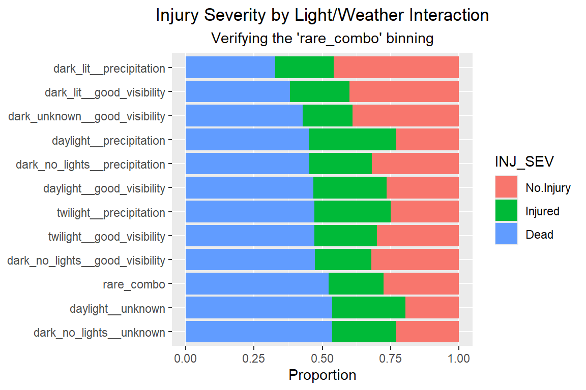
The Light × Weather interaction reveals substantial heterogeneity in injury severity across environmental condition pairings, without a clear monotonic ordering. Notably, some dark but well-lit conditions show lower fatality shares, suggesting that roadway lighting and potential behavioral responses, such as drivers reducing speed or increasing caution in perceived high-risk conditions, may mitigate injury severity. These patterns support modeling Light and Weather jointly via an interaction term, rather than imposing a single ordered “danger” index that the data do not clearly support.
Speeding is a proxy for Risk Taking. A person doing 40 in a 25 zone is likely aggressive, distracted, or reckless. This variable captures the psychology of the driver, which is a different predictor than just the force of impact. We create this dummy variable before we decide to bin the TRAV_SP, since we will drop our original TRAV_SP variable once we bin it into categories.
# --- Create temporary data for plotting ---
viz_data_speeding <- car_crash %>%
mutate(
# Replicate the logic: If Speed > Limit = Yes, otherwise No
SPEEDING = case_when(
TRAV_SP > VSPD_LIM ~ "Yes",
TRUE ~ "No" # This catches NAs (Unknowns) and marks them as No
)
)
# --- Check the distribution ---
viz_data_speeding %>%
count(SPEEDING) %>%
mutate(prop = round(n / sum(n), 4) * 100)# A tibble: 2 × 3
SPEEDING n prop
<chr> <int> <dbl>
1 No 49755 87.9
2 Yes 6842 12.1# --- Visualize Impact on Severity ---
# This answers: "Are speeders more likely to die?"
viz_data_speeding %>%
filter(!is.na(INJ_SEV)) %>%
ggplot(aes(x = SPEEDING, fill = INJ_SEV)) +
geom_bar(position = "fill") +
scale_y_continuous(labels = scales::percent) +
scale_fill_brewer(palette = "Reds") +
labs(
title = "Does Speeding Increase Fatality Risk?",
x = "Is Speeding?",
y = "Proportion of Crashes",
fill = "Severity"
) +
theme_minimal() +
theme(plot.title = element_text(hjust = 0.5))
The transformation of TRAV_SP from a continuous numerical variable into ordered categorical bins allows for a clearer visualization of the risk profile. As illustrated in the distribution, there is a distinct positive correlation between higher speed cohorts and the proportion of fatal outcomes. Notably, the ‘Unknown’ category represents a significant portion of severe crashes, validating our decision to treat missingness as a distinct predictive feature rather than imputing it. This confirms that the absence of speed data is not random, but rather a characteristic of high-impact collisions where data collection was likely compromised.
viz_data_speed <- car_crash %>%
mutate(
# Replicate the logic exactly from recipe
SPEED_CATEGORY = case_when(
is.na(TRAV_SP) ~ "Unknown",
TRAV_SP < 10 ~ "Stopped/Crawling (<10)",
TRAV_SP >= 10 & TRAV_SP < 30 ~ "Low Speed (10-29)",
TRAV_SP >= 30 & TRAV_SP < 55 ~ "Medium Speed (30-54)",
TRAV_SP >= 55 & TRAV_SP < 80 ~ "High Speed (55-80)",
TRAV_SP >= 80 ~ "Extreme Speed (80+)",
TRUE ~ "Unknown"
),
# Force the order of the bars (Ordinal Factor)
SPEED_CATEGORY = factor(SPEED_CATEGORY,
levels = c("Unknown", "Stopped/Crawling (<10)",
"Low Speed (10-29)", "Medium Speed (30-54)",
"High Speed (55-80)", "Extreme Speed (80+)"))
)
# --- Visualize Impact on Severity ---
viz_data_speed %>%
filter(!is.na(INJ_SEV)) %>%
ggplot(aes(x = SPEED_CATEGORY, fill = INJ_SEV)) +
geom_bar(position = "fill") +
scale_y_continuous(labels = scales::percent) +
scale_fill_brewer(palette = "Reds") +
labs(
title = "Impact of Speed on Injury Severity",
x = "Speed Category",
y = "Proportion of Crashes",
fill = "Severity"
) +
theme_minimal() +
theme(axis.text.x = element_text(angle = 45, hjust = 1),
plot.title = element_text(hjust = 0.5))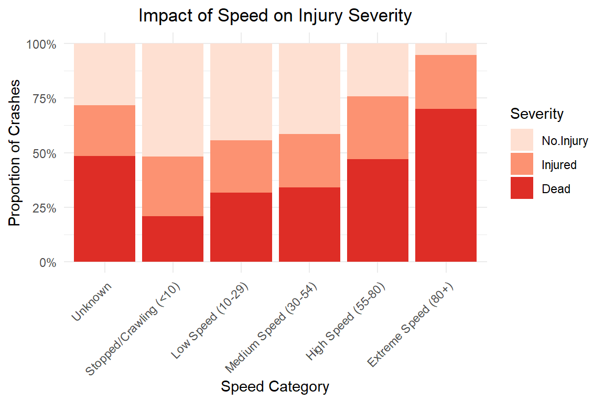
In this section, we evaluate a set of complementary classification models to predict driver injury severity using the preprocessed, leak-safe dataset. Our objective is not only to maximize predictive performance, but to assess how different modeling assumptions interact with the structure of crash data and to understand the stability of results across model classes.
We begin with multinomial logistic regression as a transparent baseline that provides interpretable class-specific effects and establishes a benchmark under linear decision boundaries. Regularized models (LASSO and Ridge) extend this framework by addressing multicollinearity and high-dimensional feature spaces created through dummy encoding, allowing us to assess whether shrinkage or feature selection improves generalization. k-Nearest Neighbors serves as a non-parametric alternative that captures local similarity patterns without imposing functional form assumptions, while random forests model nonlinear interactions and complex feature dependencies that are common in crash dynamics.
By comparing these models under a consistent preprocessing and evaluation framework, we assess whether gains in flexibility translate into meaningful performance improvements and whether prediction accuracy is driven by model choice or by structural limits of the available information.
# Function for confusion matrices as a heatmap
plot_heatmap <- function(actual, predicted, title_suffix = "") {
# convert to factor
actual <- factor(actual, levels = sort(unique(actual)))
predicted <- factor(predicted, levels = sort(unique(predicted)))
# create df
cm_data <- data.frame(table(True = actual, Predicted = predicted)) %>%
group_by(True) %>%
mutate(Pct = Freq / sum(Freq)) # Row-wise recall
# build plot
ggplot(data = cm_data, aes(x = True, y = Predicted, fill = Pct)) +
geom_tile() +
geom_text(aes(label = paste0("N=", Freq, "\n(", round(Pct*100, 1), "%)")),
color = "white", fontface = "bold", size = 2.75) +
scale_fill_gradient(low = "grey", high = "firebrick") +
labs(title = paste("Confusion Matrix:", title_suffix),
x = "Actual Class", y = "Predicted Class") +
theme_minimal() +
theme(plot.title = element_text(hjust = 0.5))
}The multinomial logistic regression serves as a natural baseline model. The confusion matrix shows a clear and consistent pattern: “No Injury” and “Dead” are predicted relatively well, while “Injured” is frequently confused with both neighboring classes. This indicates that extreme outcomes are easier to separate, whereas intermediate injury severity is more heterogeneous. Overall accuracy is moderate, but the model provides a transparent benchmark for understanding the structure of misclassification in the data.
set.seed(123)
# Caret method "multinom" uses the 'nnet' package
fit_mlogit <- train(crash_rec, data = data_train,
method = "multinom",
trControl = ctrl,
trace = FALSE) # Suppress iteration logs
# --- Predictions ---
pred_class_mlogit <- predict(fit_mlogit, newdata = data_test)
# --- Confusion Matrix & Heatmap ---
cm_mlogit <- confusionMatrix(pred_class_mlogit, data_test$INJ_SEV)
# Per-class recall (sensitivity)
recall_mlogit <- cm_mlogit$byClass[, "Sensitivity"]
# Macro-averaged balanced accuracy
balanced_acc_mlogit <- mean(recall_mlogit, na.rm = TRUE)
plot_heatmap(data_test$INJ_SEV, pred_class_mlogit, "Multinomial Logit")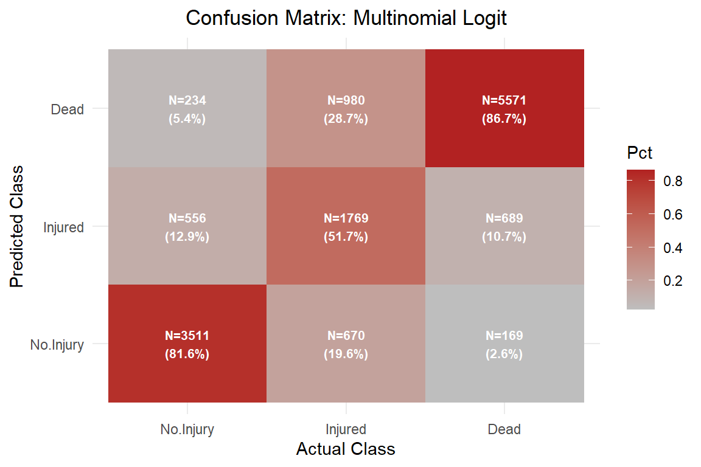
Compared to the baseline logit, the lasso model achieves slightly higher accuracy, mainly by making more confident predictions for the dominant classes. However, the overall error structure remains very similar. Performance on the “Injured” class does not improve meaningfully, suggesting that regularization helps stabilize predictions but does not fundamentally change class separability. Notice that across all three outcomes, Lasso keeps all of the variables. This suggests that each variable contains some information relevant to the predictor. As we can see, the lambda that minimizes the misclassification rate is lambda =0, which is our baseline linear model without any penalty. This suggests that the additional bias introduced via penalized regression actually does not reduce the variance enough to justify its usage versus a multinomial logistic regression
# Define Grid for Lambda (Regularization Strength)
lasso_grid <- expand.grid(alpha = 1, lambda = seq(0.0001, 0.1, length = 20))
set.seed(123)
fit_lasso <- train(crash_rec, data = data_train,
method = "glmnet",
trControl = ctrl,
tuneGrid = lasso_grid,
family = "multinomial")
# --- Predictions ---
pred_class_lasso <- predict(fit_lasso, newdata = data_test)
# --- Confusion Matrix & Heatmap ---
cm_lasso <- confusionMatrix(pred_class_lasso, data_test$INJ_SEV)
# Per-class recall (sensitivity)
recall_lasso <- cm_lasso$byClass[, "Sensitivity"]
# Macro-averaged balanced accuracy
balanced_acc_lasso <- mean(recall_lasso, na.rm = TRUE)
# See which variables are shrunk to zero globally (for all 3 categories)
lasso_coefs_list <- coef(fit_lasso$finalModel, s = fit_lasso$bestTune$lambda)
global_coef_matrix <- do.call(cbind, lapply(lasso_coefs_list, as.matrix))
is_dropped <- rowSums(abs(global_coef_matrix)) == 0
dropped_globally <- rownames(global_coef_matrix)[is_dropped]
dropped_globally <- dropped_globally[dropped_globally != "(Intercept)"]
kept_globally <- rownames(global_coef_matrix)[!is_dropped]
kept_globally <- kept_globally[kept_globally != "(Intercept)"]
# --- Results Summary ---
cat("--- LASSO GLOBAL FEATURE SELECTION ---\n")--- LASSO GLOBAL FEATURE SELECTION ---cat("Total Variables Provided: ", nrow(global_coef_matrix) - 1, "\n")Total Variables Provided: 60 cat("Variables Kept: ", length(kept_globally), "\n")Variables Kept: 60 cat("Variables Dropped: ", length(dropped_globally), "\n\n")Variables Dropped: 0 # Plot Error vs Lambda
p1 <- ggplot(fit_lasso) +
labs(title = "Lambda Tuning",
subtitle = paste("Optimal Lambda:", round(fit_lasso$bestTune$lambda, 4))) +
theme_minimal() +
theme(plot.title = element_text(hjust=0.5),
plot.subtitle = element_text(hjust = 0.5))
# Confusion Matrix
p2 <- plot_heatmap(data_test$INJ_SEV, pred_class_lasso, "LASSO")
p1 + p2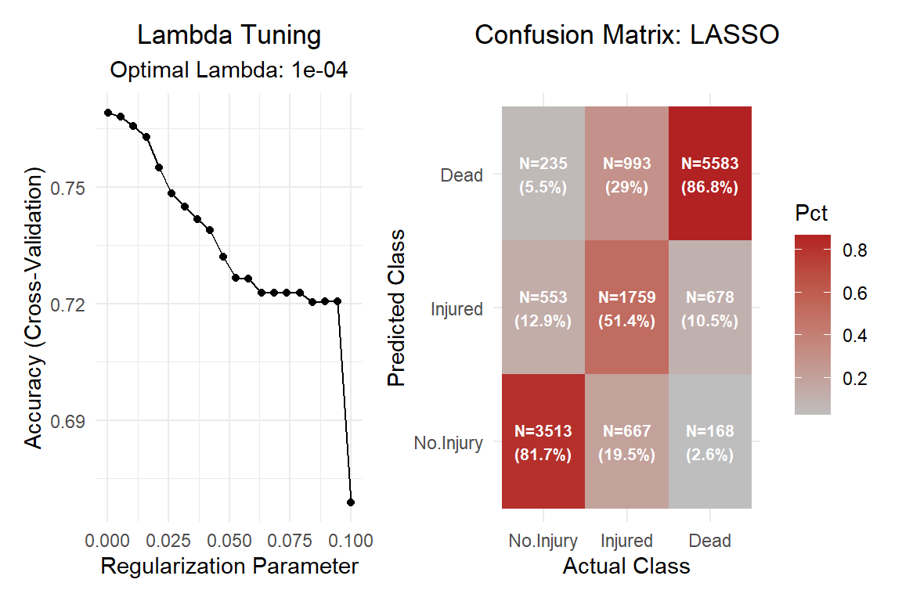
Ridge regression performs very similarly to lasso. Differences in accuracy are marginal, and the confusion matrix closely mirrors that of the multinomial logit. Ridge tends to distribute weight more evenly across predictors, but this does not translate into a clear advantage for predicting intermediate injury severity.
# Define Grid for Lambda
ridge_grid <- expand.grid(alpha = 0, lambda = seq(0.0001, 0.1, length = 20))
set.seed(123)
fit_ridge <- train(crash_rec, data = data_train,
method = "glmnet",
trControl = ctrl,
tuneGrid = ridge_grid,
family = "multinomial")
# --- Predictions ---
pred_class_ridge <- predict(fit_ridge, newdata = data_test)
# --- Confusion Matrix & Heatmap ---
cm_ridge <- confusionMatrix(pred_class_ridge, data_test$INJ_SEV)
# Per-class recall (sensitivity)
recall_ridge <- cm_ridge$byClass[, "Sensitivity"]
# Macro-averaged balanced accuracy
balanced_acc_ridge <- mean(recall_ridge, na.rm = TRUE)
p1 <- ggplot(fit_ridge) +
labs(title = "Lambda Tuning",
subtitle = paste("Optimal Lambda:", round(fit_ridge$bestTune$lambda, 4))) +
theme_minimal() +
theme(plot.title = element_text(hjust=0.5),
plot.subtitle = element_text(hjust = 0.5))
# Confusion Matrix
p2 <- plot_heatmap(data_test$INJ_SEV, pred_class_ridge, "Ridge")
p1 + p2
kNN shows lower overall accuracy compared to the linear models. It performs worse in distinguishing between injury categories, particularly for the “Dead” class, indicating sensitivity to noise and overlapping feature space. This suggests that distance-based similarity alone is insufficient to capture the complexity of injury severity patterns in the data. Note that for kNN, we only use a subsample of our training date (50%) for computational limits, since kNN computes euclidean distances between points. We still use the same test-data to compare our results, giving a fair comparison between the rest of our models.
# Define Grid for k
knn_grid <- expand.grid(k = seq(3, 21, by = 2))
set.seed(123)
fit_knn <- train(crash_rec, data = data_train_small,
method = "knn",
trControl = ctrl_small,
tuneGrid = knn_grid)
# --- Predictions ---
pred_class_knn <- predict(fit_knn, newdata = data_test)
# --- Confusion Matrix & Heatmap ---
cm_knn <- confusionMatrix(pred_class_knn, data_test$INJ_SEV)
# Per-class recall (sensitivity)
recall_knn <- cm_knn$byClass[, "Sensitivity"]
# Macro-averaged balanced accuracy
balanced_acc_knn <- mean(recall_knn, na.rm = TRUE)
# Plot k vs Accuracy
p1 <- ggplot(fit_knn) +
labs(title = "k-NN Parameter Tuning",
subtitle = paste("Optimal k =", fit_knn$bestTune$k)) +
theme_minimal() +
theme(plot.title = element_text(hjust=0.5),
plot.subtitle = element_text(hjust = 0.5))
# confusion matrix
p2 <- plot_heatmap(data_test$INJ_SEV, pred_class_knn, paste("kNN (k=", fit_knn$bestTune$k, ")"))
p1 + p2
The random forest does not substantially outperform simpler models. While it captures some nonlinear relationships, its confusion matrix shows the same dominant misclassification pattern, especially for the “Injured” class. Gains over linear models are limited, indicating that higher model complexity does not unlock significantly more predictive signal. We notice that there seems to be a flattening after ~60 trees, so we set our ntree parameter to 100 since there isn’t a noticable improvement in performance after this point.
# Note: 'mtry' is the main parameter to tune.
rf_grid <- expand.grid(mtry = c(2, 5, 10, floor(sqrt(ncol(data_train)))))
set.seed(123)
fit_rf <- train(crash_rec, data = data_train,
method = "rf",
trControl = ctrl,
tuneGrid = rf_grid,
ntree = 100,
importance = TRUE)
# --- Diagnostics ---
# OOB Error Plot
oob_data <- as.data.frame(fit_rf$finalModel$err.rate) %>%
mutate(Trees = row_number()) %>%
pivot_longer(cols = -Trees, names_to = "Error_Type", values_to = "Error_Rate")
ggplot(oob_data, aes(x = Trees, y = Error_Rate, color = Error_Type)) +
geom_line(size = 1) +
labs(
title = "OOB Error vs Number of Trees",
y = "Classification Error",
x = "Number of Trees",
color = "Legend"
) +
theme_minimal() +
scale_color_brewer(palette = "Set1") +
theme(plot.title = element_text(hjust=0.5))
# --- Predictions ---
pred_class_rf <- predict(fit_rf, newdata = data_test)
# --- Confusion Matrix & Heatmap ---
cm_rf <- confusionMatrix(pred_class_rf, data_test$INJ_SEV)
# Per-class recall (sensitivity)
recall_rf <- cm_rf$byClass[, "Sensitivity"]
# Macro-averaged balanced accuracy
balanced_acc_rf <- mean(recall_rf, na.rm = TRUE)
plot_heatmap(data_test$INJ_SEV, pred_class_rf, "Random Forest")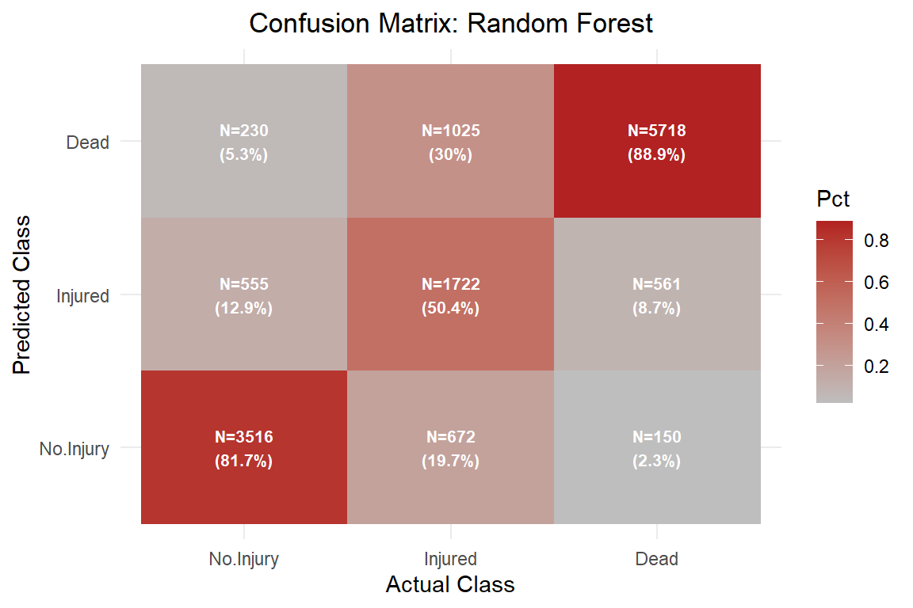
Balanced accuracy measures performance by first calculating how well the model predicts each injury category separately and then averaging these results. Unlike overall accuracy, it gives equal importance to all classes, which makes it a more truthful measure when some outcomes occur much more frequently than others, as is the case for injury severity. Although the injury severity classes are unevenly distributed, balanced accuracy closely tracks overall accuracy across all models. This indicates that higher accuracy is not achieved by favoring the most common outcomes, but reflects broadly consistent performance across injury categories. In practice, this confirms that differences between models are mainly due to changes in prediction confidence rather than shifts in how errors are distributed across severity levels.
# Create a tidy table of results
results_table <- tibble(
model = c("mLogit", "Lasso", "Ridge", "kNN", "RF"),
# Proportional Accuracy
Accuracy = c(
cm_mlogit$overall["Accuracy"],
cm_lasso$overall["Accuracy"],
cm_ridge$overall["Accuracy"],
cm_knn$overall["Accuracy"],
cm_rf$overall["Accuracy"]
),
# Balanced Accuracy
Balanced = c(
balanced_acc_mlogit,
balanced_acc_lasso,
balanced_acc_ridge,
balanced_acc_knn,
balanced_acc_rf
)
)
results_table %>%
pivot_longer(-model, names_to = "metric", values_to = "value") %>%
ggplot(aes(x = reorder(model, value), y = value, fill = model)) +
geom_bar(stat = "identity", show.legend = FALSE) +
scale_y_continuous(labels = scales::percent,
expand = expansion(mult = c(0, 0.15))) +
geom_text(aes(label = scales::percent(value, accuracy = 0.1)),
vjust = -0.5,
size = 3.5) +
facet_wrap(~metric, scales = "free_y") +
theme_minimal() +
theme(plot.title = element_text(hjust = 0.5))+
labs(x = NULL, y = "Score", title = "Model Comparison: Accuracy vs Balanced Accuracy")
Across all models, confusion matrices are remarkably similar. Extreme outcomes (“No Injury” and “Dead”) are consistently predicted better than intermediate injuries, which remain difficult to classify. More complex models do not meaningfully change this pattern, suggesting that limitations are driven primarily by data structure rather than modeling technique. Regularized linear models offer a strong balance between performance, stability, and interpretability, while additional complexity yields diminishing returns.
Because injury severity outcomes are unevenly distributed, models may become biased toward predicting the more frequent classes, potentially underperforming on less common outcomes. To assess whether rebalancing the data can reduce this bias and improve performance, we apply upsampling to the training data by increasing the representation of underrepresented injury categories. We focus this analysis on lasso regression and random forest, which represent our strongest linear and non-parametric models, respectively. Although ridge regression achieved comparable or slightly better performance, lasso was chosen to maintain consistency in variable selection and sparsity across models. This approach allows us to assess whether class imbalance, rather than intrinsic overlap between injury severities, limits model performance.
# Create a NEW recipe based on the old one
crash_rec_balanced <- crash_rec %>%
step_upsample(INJ_SEV, over_ratio = 1)
# Check to ensure the step was added
# print(crash_rec_balanced)
balanced_data <- prep(crash_rec_balanced) %>%
juice()
# 2. Check the counts with a table: even split
table(balanced_data$INJ_SEV)
No.Injury Injured Dead
19149 19149 19149 After applying upsampling, the lasso model shows a modest increase in recall for the intermediate “Injured” class, indicating that the model becomes more sensitive to less frequent outcomes. However, this comes at the cost of reduced precision and recall for the extreme classes, particularly “No Injury” and “Dead”. The overall confusion pattern remains largely unchanged, suggesting that upsampling alters the model’s prediction balance rather than fundamentally improving class separability. Here we notice that Lasso does not drop any variables once again.
# New Model (Balanced)
fit_lasso_balanced <- train(crash_rec_balanced,
data = data_train,
method = "glmnet",
trControl = ctrl,
tuneGrid = lasso_grid,
family = "multinomial")
# --- Predictions ---
pred_class_lasso_balanced <- predict(fit_lasso_balanced, newdata = data_test)
# --- Confusion Matrix & Heatmap ---
cm_lasso_balanced <- confusionMatrix(pred_class_lasso_balanced, data_test$INJ_SEV)
# Per-class recall (sensitivity)
recall_lasso_balanced <- cm_lasso_balanced$byClass[, "Sensitivity"]
# Macro-averaged balanced accuracy
balanced_acc_lasso_balanced <- mean(recall_lasso_balanced, na.rm = TRUE)
# See which variables are shrunk to zero globally (for all 3 categories)
lasso_coefs_list_balanced <- coef(fit_lasso_balanced$finalModel, s = fit_lasso_balanced$bestTune$lambda)
global_coef_matrix_balanced <- do.call(cbind, lapply(lasso_coefs_list_balanced, as.matrix))
is_dropped <- rowSums(abs(global_coef_matrix_balanced)) == 0
dropped_globally <- rownames(global_coef_matrix_balanced)[is_dropped]
dropped_globally <- dropped_globally[dropped_globally != "(Intercept)"]
kept_globally <- rownames(global_coef_matrix_balanced)[!is_dropped]
kept_globally <- kept_globally[kept_globally != "(Intercept)"]
# --- Results Summary ---
cat("--- LASSO GLOBAL FEATURE SELECTION ---\n")--- LASSO GLOBAL FEATURE SELECTION ---cat("Total Variables Provided: ", nrow(global_coef_matrix_balanced) - 1, "\n")Total Variables Provided: 60 cat("Variables Kept: ", length(kept_globally), "\n")Variables Kept: 60 cat("Variables Dropped: ", length(dropped_globally), "\n\n")Variables Dropped: 0 # Plot Error vs Lambda
ggplot(fit_lasso_balanced) +
labs(title = "Lambda Tuning",
subtitle = paste("Optimal Lambda:", round(fit_lasso_balanced$bestTune$lambda, 4))) +
theme_minimal() +
theme(plot.title = element_text(hjust=0.5),
plot.subtitle = element_text(hjust = 0.5))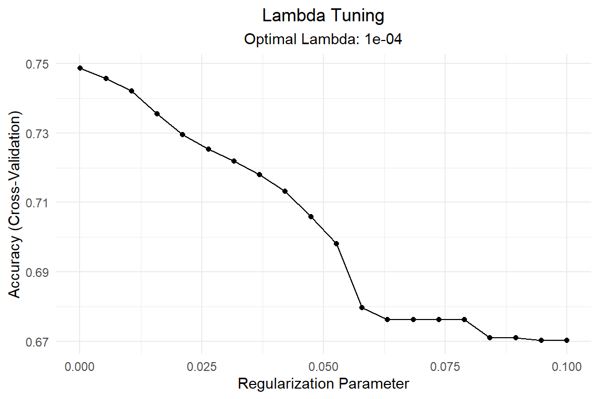
# Confusion Matrix
plot_heatmap(data_test$INJ_SEV, pred_class_lasso_balanced, "LASSO")
For the random forest, upsampling leads to similar trade-offs. While predictions for the intermediate injury category improve slightly, performance for the extreme outcomes deteriorates. The confusion matrix indicates that upsampling increases uncertainty in cases that were previously classified with high confidence. Overall, the structure of errors remains consistent with the non-upsampled model.
# New Model (Balanced)
fit_rf_balanced <- train(crash_rec_balanced, data = data_train,
method = "rf",
trControl = ctrl,
tuneGrid = rf_grid,
ntree = 100,
importance = TRUE)
# --- Diagnostics ---
# 1. OOB Error Plot
oob_data_balanced <- as.data.frame(fit_rf_balanced$finalModel$err.rate) %>%
mutate(Trees = row_number()) %>%
pivot_longer(cols = -Trees, names_to = "Error_Type", values_to = "Error_Rate")
ggplot(oob_data_balanced, aes(x = Trees, y = Error_Rate, color = Error_Type)) +
geom_line(size = 1) +
labs(
title = "OOB Error vs Number of Trees",
y = "Classification Error",
x = "Number of Trees",
color = "Legend"
) +
theme_minimal() +
scale_color_brewer(palette = "Set1") +
theme(plot.title = element_text(hjust = 0.5))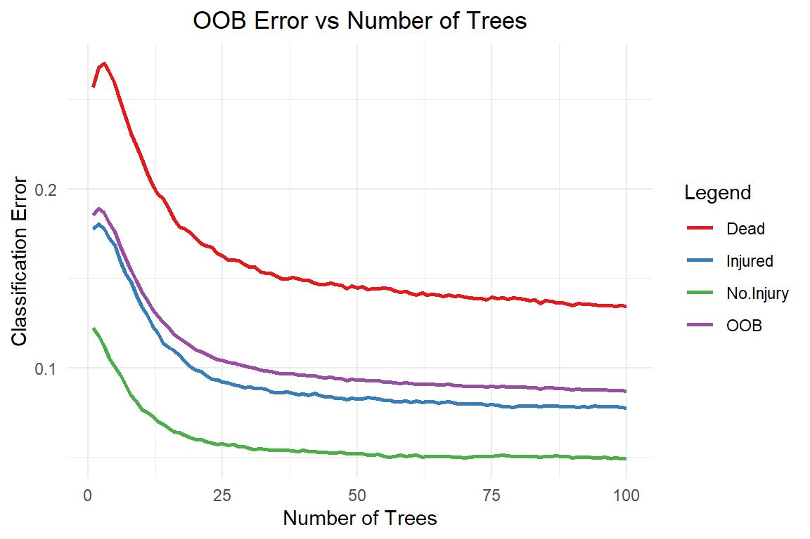
# --- Predictions ---
pred_class_rf_balanced <- predict(fit_rf_balanced, newdata = data_test)
# --- Confusion Matrix & Heatmap ---
cm_rf_balanced <- confusionMatrix(pred_class_rf_balanced, data_test$INJ_SEV)
# Per-class recall (sensitivity)
recall_rf_balanced <- cm_rf_balanced$byClass[, "Sensitivity"]
# Macro-averaged balanced accuracy
balanced_acc_rf_balanced <- mean(recall_rf_balanced, na.rm = TRUE)
plot_heatmap(data_test$INJ_SEV, pred_class_rf_balanced, "Random Forest")Despite rebalancing the training data, accuracy and balanced accuracy remain closely aligned. This suggests that upsampling does not lead to a more equitable performance across classes, and that gains in minority-class recall are offset by losses elsewhere. Balanced accuracy therefore confirms that upsampling does not yield a net improvement in classification quality.
acc_lasso <- cm_lasso$overall["Accuracy"]
acc_rf <- cm_rf$overall["Accuracy"]
acc_lasso_bal <- cm_lasso_balanced$overall["Accuracy"]
acc_rf_bal <- cm_rf_balanced$overall["Accuracy"]
tibble(
model = c("Lasso (Unbalanced)", "Lasso (Balanced)",
"RF (Unbalanced)", "RF (Balanced)"),
Accuracy = c(acc_lasso, acc_lasso_bal,
acc_rf, acc_rf_bal)) %>%
mutate(
Algorithm = case_when(
grepl("Lasso", model) ~ "Lasso",
grepl("RF", model) ~ "Random Forest"
),
Strategy = case_when(
grepl("Unbalanced", model) ~ "Unbalanced Data",
TRUE ~ "Balanced Data"
), Strategy = factor(Strategy, levels = c("Unbalanced Data", "Balanced Data"))
) %>%
ggplot(aes(x = Algorithm, y = Accuracy, fill = Algorithm)) +
geom_bar(stat = "identity", width = 0.5, show.legend = FALSE) +
scale_fill_brewer(palette = "Dark2") +
facet_wrap(~Strategy) +
scale_y_continuous(labels = scales::percent, limits = c(0, 1.05), expand = c(0,0)) +
geom_text(aes(label = scales::percent(Accuracy, accuracy = 0.1)),
vjust = -0.5,
size = 3.5)+
theme_minimal(base_size = 14) +
theme(
panel.grid.major.x = element_blank(),
strip.text = element_text(face = "bold", size = 12),
plot.title = element_text(hjust=0.5)
) +
labs(x = NULL, y = "Accuracy Score",
title = "Model Accuracy: Balanced vs Unbalanced")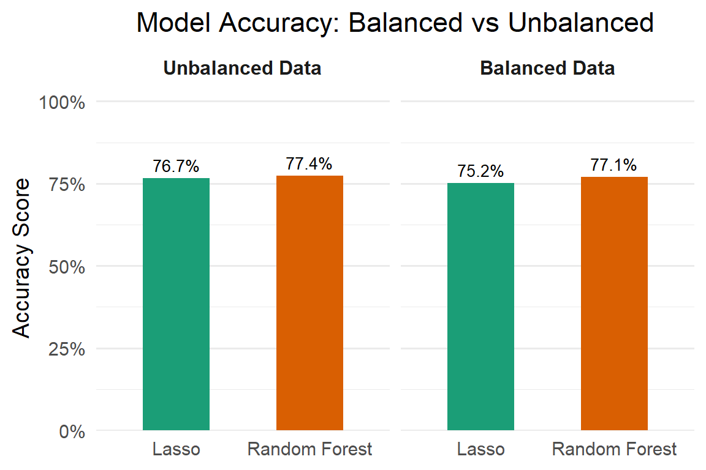
Across both lasso regression and random forest models, upsampling does not lead to a meaningful improvement in predictive performance in the multiclass injury severity setting. While sensitivity to the intermediate “Injured” category increases slightly, this comes at the expense of reduced performance for the more clearly separable outcomes (“No Injury” and “Dead”). Overall accuracy and balanced accuracy do not improve, indicating that upsampling primarily redistributes errors across classes rather than enhancing class separation. These results suggest that intrinsic overlap between injury severity categories, rather than class imbalance alone, is the primary limitation, and that maintaining the original data distribution yields more reliable generalization.
In the multiclass setting, model performance was primarily limited by difficulty in separating the intermediate “Injured” category from adjacent severity levels. This middle category exhibited substantial overlap in characteristics with both non-injury and fatal outcomes, leading to persistent misclassification across models. To assess how model performance changes when the target separation is clearer, we reformulate the outcome as a binary variable distinguishing fatal versus non-fatal crashes. This transformation also naturally reduces class imbalance without relying on resampling techniques. As earlier experiments with upsampling did not improve performance and introduced trade-offs between classes, the binary framing allows us to evaluate model behavior under a more balanced outcome distribution while preserving the original data structure. As in the multiclass analysis, we focus on comparable linear and non-parametric models to assess whether clearer outcome definitions lead to improved discrimination and more meaningful differences between modeling approaches.
car_crash_binary <- car_crash %>%
mutate(INJ_SEV = case_when(
grepl("Dead", INJ_SEV, ignore.case = TRUE) ~ "Fatal",
TRUE ~ "Non_Fatal"
)) %>%
mutate(INJ_SEV = factor(INJ_SEV, levels = c("Non_Fatal", "Fatal")))
# check new balance: 55/45 split
car_crash_binary %>%
count(INJ_SEV) %>%
mutate(prop = round(n/sum(n),4)*100)# A tibble: 2 × 3
INJ_SEV n prop
<fct> <int> <dbl>
1 Non_Fatal 31019 54.8
2 Fatal 25578 45.2set.seed(123)
levels(car_crash_binary$INJ_SEV) <- make.names(levels(car_crash_binary$INJ_SEV))
# train-test split -------------------------------------------------------
split_binary <- group_initial_split(car_crash_binary, group = ST_CASE,
prop = 0.75)
data_train_binary <- training(split_binary)
data_test_binary <- testing(split_binary)
# small sample (50%) for kNN
data_train_binary_small <- data_train_binary %>%
slice_sample(prop = 0.5, replace = FALSE)
# CTRL for kNN sample:
folds_list_small_binary <- groupKFold(data_train_binary_small$ST_CASE, k = 4)
validation_index_small_binary <- list(Fold1 = folds_list_small_binary[[1]])
ctrl_binary_small <- trainControl(
index = validation_index_small_binary, # <--- Uses the small indices
method = "cv",
classProbs = TRUE,
savePredictions = "final"
)
# Create Grouped Folds: this creates list of row indices where no ST_CASE is split across folds
folds_list_binary <- groupKFold(data_train_binary$ST_CASE, k = 4)
validation_index_binary <- list(Fold1 = folds_list_binary[[1]]) # create our validation set
# Pass these folds to trainControl
ctrl_binary <- trainControl(
index = validation_index_binary, # This forces caret to respect the groups
method = "cv", # method is still validation set, created above
classProbs = TRUE,
summaryFunction = twoClassSummary,
savePredictions = "final"
)# recipe: leak-safe imputation -------------------------------------------
crash_rec_binary <- recipe(INJ_SEV ~ ., data = data_train_binary) %>%
# --- 1. CLEANING & IMPUTATION ---
# A. Fix Invalid Hours (99 -> NA) so we can impute them
step_mutate(
HOUR = ifelse(HOUR == 99, NA, HOUR)
) %>%
# B. Impute Missing Values (Now including HOUR)
step_impute_knn(VSPD_LIM, impute_with = imp_vars(STATENAME, ROUTE), neighbors = 5) %>%
step_impute_knn(AGE, impute_with = imp_vars(BODYCLASS_SIMPLE, HOUR, SEX),
neighbors = 5) %>%
step_impute_median(HOUR) %>%
# --- 2. FEATURE ENGINEERING ---
# A. Cyclic Encoding for Time
step_mutate(
HOUR_SIN = sin(2 * pi * HOUR / 24),
HOUR_COS = cos(2 * pi * HOUR / 24)
) %>%
# B. Create new vars: speeding flag, LGT_WEATHER interaction
step_mutate(
SPEEDING = case_when(
TRAV_SP > VSPD_LIM ~ "Yes",
TRUE ~ "No"
),
SPEEDING = factor(SPEEDING),
# Create Interaction String
LGT_X_WEATHER = paste(LGT_SIMPLE, WEATHER_SIMPLE, sep = "__")
) %>%
# Lumping (Handling Rare Categories)
step_other(LGT_X_WEATHER, threshold = 0.005, other = "rare_combo") %>%
# --- C. TRAV_SP (Binning) ---
step_mutate(
SPEED_CATEGORY = case_when(
is.na(TRAV_SP) ~ "Unknown",
TRAV_SP < 10 ~ "Stopped/Crawling (<10)",
TRAV_SP >= 10 & TRAV_SP < 30 ~ "Low Speed (10-29)",
TRAV_SP >= 30 & TRAV_SP < 55 ~ "Medium Speed (30-54)",
TRAV_SP >= 55 & TRAV_SP < 80 ~ "High Speed (55-80)",
TRAV_SP >= 80 ~ "Extreme Speed (80+)",
TRUE ~ "Unknown" # Catch-all just in case
),
SPEED_CATEGORY = factor(SPEED_CATEGORY,
levels = c("Unknown", "Stopped/Crawling (<10)",
"Low Speed (10-29)", "Medium Speed (30-54)",
"High Speed (55-80)", "Extreme Speed (80+)"))
) %>%
step_rm(HOUR, TRAV_SP, STATENAME, ST_CASE) %>%
# --- D. Standard Pre-processing ---
# Convert all other characters to factors (e.g., SEX, WEATHER)
step_string2factor(all_nominal_predictors(), -matches("SPEED_CATEGORY")) %>%
# Dummy encode everything (One-Hot Encoding)
step_dummy(all_nominal_predictors(), -all_outcomes()) %>%
# Remove sparse and unbalanced predictors
step_nzv(all_predictors()) %>%
# Normalize numeric predictors
step_normalize(all_numeric_predictors())
# --- 4. Verify it works ---
# crash_rec %>%
# prep() %>%
# bake(car_crash) In the binary setting, logistic regression shows a clear improvement relative to the multiclass case. The model achieves high sensitivity for non-fatal crashes, correctly identifying a large share of survivable outcomes, while maintaining reasonable sensitivity (recall) for fatal crashes. Compared to the three-class setting, where misclassification was driven by overlap with the intermediate “Injured” category, the binary formulation allows the model to focus on a single decision boundary. Although direct metric comparisons are limited, the confusion structure indicates fewer false positives for fatal outcomes and more stable classification overall.
fit_logit <- train(crash_rec_binary,
data = data_train_binary,
method = "glmnet",
family = "binomial",
trControl = ctrl_binary,
metric = "ROC",
trace = FALSE)
# --- Predictions ---
pred_class_logit <- predict(fit_logit, newdata = data_test_binary)
# --- Confusion Matrix & Heatmap ---
cm_logit <- confusionMatrix(pred_class_logit, data_test_binary$INJ_SEV,
positive = "Fatal")
plot_heatmap(data_test_binary$INJ_SEV, pred_class_logit, "Logit")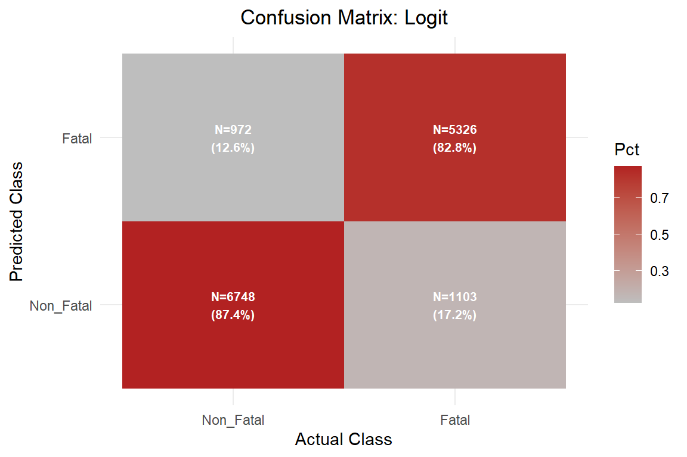
# Store ROC
pred_prob_logit <- predict(fit_logit, newdata = data_test_binary, type = "prob")
roc_logit <- roc(data_test_binary$INJ_SEV, pred_prob_logit$Fatal)Lasso regression performs similarly to the baseline logistic model, with slightly improved stability due to coefficient shrinkage. In the binary case, regularization helps reduce false positive predictions of fatal crashes, improving specificity for the non-fatal class while preserving sensitivity for fatalities. Compared to the multiclass setting, where lasso primarily increased confidence without altering recall patterns, the binary formulation allows sparsity to sharpen the trade-off between sensitivity and specificity more effectively.
# Define Grid for Lambda (Regularization Strength)
lasso_grid <- expand.grid(alpha = 1, lambda = seq(0.0001, 0.1, length = 20))
fit_lasso_binary <- train(crash_rec_binary, data = data_train_binary,
method = "glmnet",
trControl = ctrl_binary,
tuneGrid = lasso_grid,
metric = "ROC",
family = "binomial")
# 1. Lasso Tuning Plot
p1 <- ggplot(fit_lasso_binary) +
labs(title = "Lambda Tuning",
subtitle = paste("Best Lambda:", round((fit_lasso_binary$bestTune$lambda), 3))) +
theme_minimal() +
theme(plot.subtitle = element_text(hjust = 0.5),
plot.title = element_text(hjust = 0.5))
# 2. Coefficient Path plot
p2 <- wrap_elements(full = ~{
mod <- fit_lasso_binary$finalModel
plot(mod, xvar = "lambda", label = TRUE)
l_val <- log(fit_lasso_binary$bestTune$lambda)
abline(v = l_val, col = "red", lty = 2, lwd = 2)
})
p1 + p2
# --- Predictions ---
pred_class_lasso_binary <- predict(fit_lasso_binary, newdata = data_test_binary)
# --- Confusion Matrix & Heatmap ---
cm_lasso_binary <- confusionMatrix(pred_class_lasso_binary, data_test_binary$INJ_SEV,
positive = "Fatal")
# See how many variables are kept/dropped
lasso_coefs_binary <- as.matrix(coef(fit_lasso_binary$finalModel, s = fit_lasso_binary$bestTune$lambda))
is_dropped <- lasso_coefs_binary[, 1] == 0
dropped_globally <- rownames(lasso_coefs_binary)[is_dropped]
dropped_globally <- dropped_globally[dropped_globally != "(Intercept)"]
kept_globally <- rownames(lasso_coefs_binary)[!is_dropped]
kept_globally <- kept_globally[kept_globally != "(Intercept)"]
# --- Results Summary ---
cat("--- LASSO GLOBAL FEATURE SELECTION (BINARY) ---\n")--- LASSO GLOBAL FEATURE SELECTION (BINARY) ---cat("Total Variables Provided: ", nrow(lasso_coefs_binary) - 1, "\n")Total Variables Provided: 60 cat("Variables Kept: ", length(kept_globally), "\n")Variables Kept: 59 cat("Variables Dropped: ", length(dropped_globally), "\n\n")Variables Dropped: 1 # confusion matrix
plot_heatmap(data_test_binary$INJ_SEV, pred_class_lasso_binary, "LASSO")
# Store ROC
pred_prob_lasso_binary <- predict(fit_lasso_binary, newdata = data_test_binary, type = "prob")
roc_lasso <- roc(data_test_binary$INJ_SEV, pred_prob_lasso_binary$Fatal)Ridge regression delivers comparable performance to lasso, with balanced sensitivity across fatal and non-fatal outcomes. By retaining correlated predictors, ridge aggregates small effects that contribute to fatal risk, leading to stable recall without excessive false positives. As in the multiclass case, differences between linear models remain modest, but the clearer binary outcome allows their behavior to be interpreted more directly in terms of sensitivity and specificity.
# Define Grid for Lambda
ridge_grid <- expand.grid(alpha = 0, lambda = seq(0.0001, 0.1, length = 20))
fit_ridge_binary <- train(crash_rec_binary,
data = data_train_binary,
method = "glmnet",
trControl = ctrl_binary,
tuneGrid = ridge_grid,
metric = "ROC",
family = "binomial")
# 1. Optimal Lambda Path
p1 <- ggplot(fit_ridge_binary) +
labs(title = "Lambda Tuning") +
theme_minimal()
# 2. Coefficient Path plot
p2 <- wrap_elements(full = ~{
plot(fit_ridge_binary$finalModel, xvar = "lambda", label = TRUE)
# Add a vertical line for the optimal lambda
abline(v = log(fit_ridge_binary$bestTune$lambda), col = "red", lty = 2)
})
p1 + p2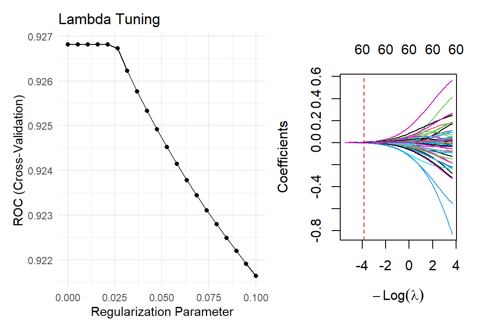
# --- Predictions ---
pred_class_ridge_binary <- predict(fit_ridge_binary, newdata = data_test_binary)
# --- Confusion Matrix & Heatmap ---
cm_ridge_binary <- confusionMatrix(pred_class_ridge_binary, data_test_binary$INJ_SEV,
positive = "Fatal")
plot_heatmap(data_test_binary$INJ_SEV, pred_class_ridge_binary, "RIDGE")
# Store ROC
pred_prob_ridge_binary <- predict(fit_ridge_binary, newdata = data_test_binary, type = "prob")
roc_ridge <- roc(data_test_binary$INJ_SEV, pred_prob_ridge_binary$Fatal)kNN shows improved performance compared to its multiclass results but remains weaker than linear and tree-based models. While sensitivity for non-fatal crashes increases, the model still exhibits higher false negative rates for fatal outcomes, indicating limited ability to reliably detect death cases. This mirrors the multiclass setting, where local similarity struggled to separate overlapping injury categories, and suggests that distance-based methods remain sensitive to noise in high-dimensional feature space.
# Define Grid for k
knn_grid <- expand.grid(k = seq(3, 21, by = 2))
fit_knn_binary <- train(crash_rec_binary,
data = data_train_binary_small,
method = "knn",
trControl = ctrl_binary_small,
metric = "ROC",
tuneGrid = knn_grid)
# --- Predictions ---
pred_class_knn_binary <- predict(fit_knn_binary, newdata = data_test_binary)
# --- Confusion Matrix & Heatmap ---
cm_knn_binary <- confusionMatrix(pred_class_knn_binary, data_test_binary$INJ_SEV,
positive = "Fatal")
# Plot k vs Accuracy
p1 <- ggplot(fit_knn_binary) +
labs(title = "k-NN Parameter Tuning",
subtitle = paste("Optimal k =", fit_knn$bestTune$k)) +
theme_minimal() +
theme(plot.subtitle = element_text(hjust = 0.5),
plot.title = element_text(hjust = 0.5))
# Confusion Matrix
p2 <- plot_heatmap(data_test_binary$INJ_SEV, pred_class_knn_binary,
paste("kNN (k=", fit_knn_binary$bestTune$k, ")"))
p1 + p2
# Store ROC
pred_prob_knn_binary <- predict(fit_knn_binary, newdata = data_test_binary, type = "prob")
roc_knn <- roc(data_test_binary$INJ_SEV, pred_prob_knn_binary$Fatal)The random forest benefits more clearly from the binary outcome formulation. Compared to the multiclass case, the model achieves improved sensitivity for fatal crashes, indicating better detection of high-risk scenarios. However, gains are partially offset by a modest increase in false positives, reflecting a trade-off between sensitivity and specificity. While nonlinear interactions contribute more meaningfully in the binary setting, overall improvements over regularized linear models remain moderate.
# Note: 'mtry' is the main parameter to tune.
rf_grid <- expand.grid(mtry = c(2, 5, 10, floor(sqrt(ncol(data_train_binary)))))
fit_rf_binary <- train(crash_rec_binary, data = data_train_binary,
method = "rf",
trControl = ctrl_binary,
tuneGrid = rf_grid,
ntree = 100,
metric = "ROC",
importance = TRUE)
# --- Diagnostics ---
# 1. OOB Error Plot
oob_data_binary <- as.data.frame(fit_rf_binary$finalModel$err.rate) %>%
mutate(Trees = row_number()) %>%
pivot_longer(cols = -Trees, names_to = "Error_Type", values_to = "Error_Rate")
ggplot(oob_data_binary, aes(x = Trees, y = Error_Rate, color = Error_Type)) +
geom_line(size = 1) +
labs(
title = "OOB Error vs Number of Trees",
y = "Classification Error",
x = "Number of Trees",
color = "Legend"
) +
theme_minimal() +
scale_color_brewer(palette = "Set1")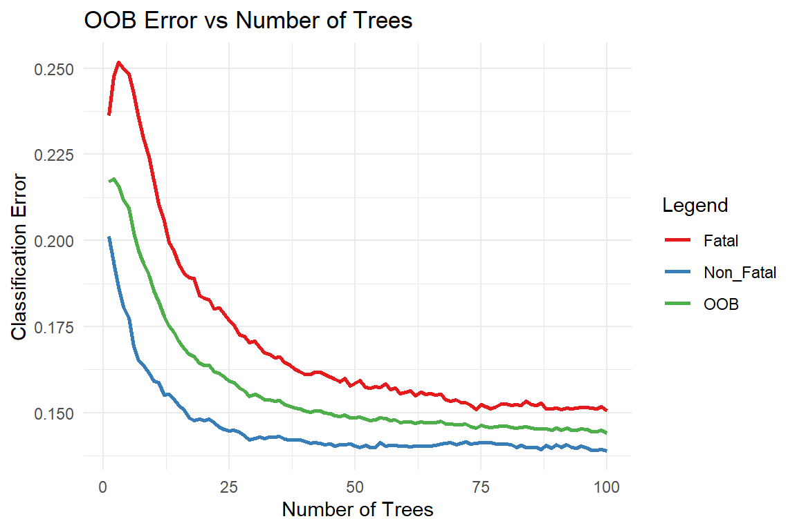
# --- Predictions ---
pred_class_rf_binary <- predict(fit_rf_binary, newdata = data_test_binary)
# --- Confusion Matrix & Heatmap ---
cm_rf_binary <- confusionMatrix(pred_class_rf_binary, data_test_binary$INJ_SEV,
positive = "Fatal")
plot_heatmap(data_test_binary$INJ_SEV, pred_class_rf_binary, "Random Forest")
# Store ROC
pred_prob_rf_binary <- predict(fit_rf_binary, newdata = data_test_binary, type = "prob")
roc_rf <- roc(data_test_binary$INJ_SEV, pred_prob_rf_binary$Fatal)Across all models, the binary formulation enables clearer interpretation of performance in terms of sensitivity, specificity, and false positive/negative errors. Improvements relative to the multiclass setting are driven primarily by the removal of the ambiguous intermediate category, rather than by changes in model complexity. While direct metric comparisons are not appropriate, the binary results highlight how outcome definition influences achievable sensitivity for fatal crashes and overall classification stability.
# 0. Misclassification Rates (Accuracy):
model_comparison <- data.frame(
Model = c("Logistic Regression", "Lasso", "Ridge", "k-NN", "Random Forest"),
Accuracy = c(
cm_logit$overall["Accuracy"],
cm_lasso_binary$overall["Accuracy"],
cm_ridge_binary$overall["Accuracy"],
cm_knn_binary$overall["Accuracy"],
cm_rf_binary$overall["Accuracy"]
),
Balanced_Accuracy = c(
cm_logit$byClass["Balanced Accuracy"],
cm_lasso_binary$byClass["Balanced Accuracy"],
cm_ridge_binary$byClass["Balanced Accuracy"],
cm_knn_binary$byClass["Balanced Accuracy"],
cm_rf_binary$byClass["Balanced Accuracy"]
)
)
model_summary_table <- model_comparison %>%
mutate(across(where(is.numeric), ~ round(., 3))) %>%
arrange(desc(Accuracy))
print("--- Final Model Leaderboard (Misclassification Rate) ---")[1] "--- Final Model Leaderboard (Misclassification Rate) ---"print(model_summary_table) Model Accuracy Balanced_Accuracy
1 Random Forest 0.864 0.863
2 Logistic Regression 0.853 0.851
3 Lasso 0.853 0.851
4 Ridge 0.848 0.845
5 k-NN 0.819 0.812# 1. Gather all ROC objects into a list
roc_list <- list(
Logistic = roc_logit,
Ridge = roc_ridge,
Lasso = roc_lasso,
kNN = roc_knn,
RandomForest = roc_rf
)
# 2. Extract AUC values
auc_values <- sapply(roc_list, function(x) as.numeric(auc(x)))
# 3. Create a Data Frame
auc_table <- data.frame(
Model = names(auc_values),
AUC = round(auc_values, 4)
)
# 4. Sort by AUC (Descending)
auc_table_sorted <- auc_table %>%
arrange(desc(AUC))
# 5. Print the Clean Table
print("--- Final Model Leaderboard (AUC) ---")[1] "--- Final Model Leaderboard (AUC) ---"print(auc_table_sorted) Model AUC
RandomForest RandomForest 0.9372
Logistic Logistic 0.9308
Lasso Lasso 0.9308
Ridge Ridge 0.9286
kNN kNN 0.9092ggroc(roc_list, size = 1) +
geom_abline(slope = 1, intercept = 1, linetype = "dashed", color = "grey") +
labs(title = "ROC Comparison",
color = "Models") +
theme_minimal() +
theme(plot.title = element_text(hjust = 0.5))
Reformulating injury severity as a binary outcome (fatal vs. non-fatal) leads to clearer and more stable model performance across all approaches. By removing the ambiguous intermediate injury category, the classification task becomes structurally simpler, allowing models to focus on separating extreme outcomes rather than ranking overlapping severity levels. While direct metric comparisons with the three-class setting are limited, the binary results demonstrate consistently improved discrimination and more meaningful differences between models. Importantly, the naturally closer balance between fatal and non-fatal outcomes yields better performance without the need for resampling. In contrast to earlier upsampling experiments, where gains for minority outcomes were offset by losses elsewhere, the binary formulation improves performance without introducing artificial noise or redistributing errors across classes. This suggests that the primary limitation in the multiclass setting was not class imbalance alone, but intrinsic overlap between injury severity categories. Overall, the binary analysis shows that clearer outcome definitions and natural class balance are more effective than resampling techniques in improving predictive performance. The results highlight how outcome formulation plays a central role in achievable model accuracy and interpretability, and demonstrate that simplifying the target variable can reveal stronger and more reliable predictive signal than adjusting class proportions through upsampling.
The figure shows the most important predictors for lasso regression and random forest in the three-class injury severity setting. To allow comparison across models, variable importance scores were normalized within each model, benchmarking the most influential variable to one. This normalization makes relative importance comparable across fundamentally different modeling approaches.
Across both models, and consistently across alternative specifications (including undersampling and the binary outcome), a stable set of variables repeatedly emerges as influential, although their exact ranking varies. These variables can be grouped into a few key themes that appear decisive in determining crash severity.
First, crash type and exposure play a central role. Variables capturing collisions with non-motorists, non-vehicle crashes, or motorcycles consistently rank among the most important predictors, reflecting the heightened vulnerability of certain road users. Second, occupant protection and vehicle safety indicators, such as restraint use, airbag deployment, and rollover involvement—are highly influential, highlighting the importance of protective mechanisms during a crash. Third, impact severity proxies, including vehicle deformation and the number of vehicles involved, contribute strongly, suggesting that crash force and complexity are key drivers of injury outcomes. Finally, behavioral risk factors, such as alcohol involvement and speeding, appear repeatedly, although their relative importance differs across models.
Although these patterns suggest a coherent narrative linking vulnerability, protection, and crash dynamics to injury severity, interpretation is limited. Importance rankings vary across models due to differences in how predictors and interactions are handled, and reflect predictive relevance rather than causality.
The recurrence of similar variable groups across models nonetheless indicates robust underlying structure, while variation in rankings underscores that injury severity arises from multiple interacting factors rather than a single dominant driver.
lasso_coefs_raw <- coef(fit_lasso$finalModel, s = fit_lasso$bestTune$lambda)
lasso_vi <- do.call(rbind, lapply(names(lasso_coefs_raw), function(class_name) {
data.frame(
Variable = rownames(as.matrix(lasso_coefs_raw[[class_name]])),
Importance = as.vector(as.matrix(lasso_coefs_raw[[class_name]])),
Class = class_name
)
})) %>%
filter(Variable != "(Intercept)") %>%
group_by(Variable) %>%
summarize(Importance = mean(abs(Importance))) %>%
mutate(Model = "Lasso")
# --- 2. Extract Random Forest Importance ---
rf_vi <- vi(fit_rf$finalModel) %>%
rename(Importance = Importance) %>%
mutate(Model = "Random Forest")
# --- 3. Combine and Normalize (0-100 scale) ---
# We filter for the Top 20 variables from the Random Forest to keep the plot clean
top_vars <- rf_vi %>% arrange(desc(Importance)) %>% head(15) %>% pull(Variable)
combined_vi <- bind_rows(lasso_vi, rf_vi) %>%
filter(Variable %in% top_vars) %>%
group_by(Model) %>%
mutate(Norm_Importance = (Importance / max(Importance)) * 100) %>%
ungroup()
# --- 4. Generate the Comparison Plot ---
#
ggplot(combined_vi, aes(x = Norm_Importance,
y = reorder(Variable, Norm_Importance),
fill = Model)) +
geom_col(position = position_dodge(width = 0.7), width = 0.6) +
scale_fill_manual(values = c("Random Forest" = "#1b9e77", "Lasso" = "#d95f02")) +
labs(title = "Model Comparison: Variable Importance",
subtitle = "Top 15 predictors (Normalized 0-100)",
x = "Importance Score (Normalized)",
y = NULL) +
theme_minimal() +
theme(legend.position = "bottom",
plot.subtitle = element_text(hjust = 0.5),
plot.title = element_text(hjust = 0.5))
This project analyzed injury severity in traffic crashes using multiple models, outcome formulations, and imbalance-handling strategies. Results show that outcome definition matters more than model complexity: in the multiclass setting, all models struggled to separate intermediate injury severity, while reformulating the task as fatal versus non-fatal led to clearer separation and more stable performance. Regularized linear models and random forests performed similarly, indicating that most predictive signal is additive and that increased model complexity offers limited gains. Attempts to address imbalance through upsampling did not improve performance, suggesting that class overlap rather than imbalance alone limits predictability.
Overall, the models achieve decent predictive performance, particularly in correctly identifying extreme outcomes; however, it is important to acknowledge several limitations. Many influential predictors, such as airbag deployment, vehicle deformation, fire, and rollover, are post-impact proxies that reflect crash severity rather than pre-crash risk, limiting causal insight. The data are U.S.-specific, reflecting particular driving behavior, vehicle fleets, and reporting practices, and no external validation was available. Overall, the findings highlight that while machine learning can capture meaningful structure in crash data, predictive performance is fundamentally bounded by outcome ambiguity, proxy variables, and data context.